<!doctype html>
<html lang="en">
<head>
  <meta charset="utf-8">
  <meta name="viewport" content="width=device-width, initial-scale=1">
  <title>arxiv digest — 2026-08-12</title>
  <style>
:root {
  --bg: #ffffff;
  --fg: #1f2328;
  --muted: #59636e;
  --border: #d0d7de;
  --card: #f6f8fa;
  --link: #0969da;
}
body {
  max-width: 980px;
  margin: 0 auto;
  padding: 2rem 1rem 5rem;
  font-family: -apple-system, BlinkMacSystemFont, "Segoe UI", Helvetica, Arial, sans-serif;
  line-height: 1.55;
  color: var(--fg);
  background: var(--bg);
}
a { color: var(--link); }
img { max-width: 100%; height: auto; }
pre, code { background: var(--card); border-radius: 6px; }
pre { padding: 1rem; overflow-x: auto; }
blockquote { border-left: 4px solid var(--border); padding-left: 1rem; color: var(--muted); }
details { margin: 0.6rem 0; }
summary { cursor: pointer; font-weight: 600; }
.paper-figures-scroll {
  display: flex;
  gap: 1rem;
  overflow-x: auto;
  overscroll-behavior-x: contain;
  padding: 0.75rem 0.25rem 1rem;
  margin: 1rem 0 1.25rem;
  border-top: 1px solid var(--border);
  border-bottom: 1px solid var(--border);
  scroll-snap-type: x proximity;
}
.paper-figure-card {
  flex: 0 0 min(260px, 72vw);
  scroll-snap-align: start;
  background: var(--card);
  border: 1px solid var(--border);
  border-radius: 12px;
  padding: 0.55rem;
}
.paper-figure-card img {
  display: block;
  width: 100%;
  max-height: 240px;
  object-fit: contain;
  background: white;
  border-radius: 8px;
}
.paper-figure-caption {
  display: block;
  margin-top: 0.5rem;
  color: var(--muted);
  font-size: 0.85rem;
}
.figure-strip-hint {
  color: var(--muted);
  font-size: 0.9rem;
  margin-bottom: -0.3rem;
}
</style>
  <!-- MathJax: renders $...$ inline math and $$...$$ display math, plus
       \(...\) and \[...\]. Loaded from the official CDN; works offline
       once cached. Configured to skip code/pre blocks so arxiv IDs that
       look like dollar amounts don't get mangled. -->
  <script>
    window.MathJax = {
      tex: {
        inlineMath: [['$', '$'], ['\\(', '\\)']],
        displayMath: [['$$', '$$'], ['\\[', '\\]']],
        processEscapes: true,
        processEnvironments: true
      },
      options: {
        skipHtmlTags: ['script', 'noscript', 'style', 'textarea', 'pre', 'code'],
        ignoreHtmlClass: 'tex2jax_ignore',
        processHtmlClass: 'tex2jax_process'
      }
    };
  </script>
  <script id="MathJax-script" async
    src="https://cdn.jsdelivr.net/npm/mathjax@3/es5/tex-chtml.js"></script>
</head>
<body>
<header style="background-color: #333; color: white; padding: 15px; margin-bottom: 20px;">
  <h1 style="margin: 0; font-size: 24px;">
    <a href="https://ochelpan.github.io/arXiv_clean/" style="color: white; text-decoration: none;">Main</a>
  </h1>
</header>

<h1>Daily arXiv Report</h1>

<hr>
<p>
<a href="index.html">← Index</a>
 · <a href="papers_07.html">← Previous</a> · <a href="papers_09.html">Next →</a>
</p>
<hr>

<h2>Papers 141–160</h2>
<p><a id="paper-2608.07686"></a></p>
<h3 id="emergent-problem-graph-alignment-in-rl-discovered-entanglement-topologies-for-qaoa"><a href="http://arxiv.org/abs/2608.07686v1">Emergent Problem-Graph Alignment in RL-Discovered Entanglement Topologies for QAOA</a></h3>
<p><strong>Authors:</strong> Tobias Rohe, Federico Harjes Ruiloba, Markus Baumann, Gerhard Stenzel, Leo Sünkel, Thomas Gabor, Claudia Linnhoff-Popien<br>
<strong>Type:</strong> both · <strong>Category:</strong> quantum information and computing · <strong>PDF:</strong> <a href="https://arxiv.org/pdf/2608.07686v1">https://arxiv.org/pdf/2608.07686v1</a><br>
<strong>Analysis basis:</strong> full PDF text, analyzed in chunks
<strong>Topic relevance:</strong> <code>quantum measurements</code> <strong>1/5</strong></p>
<div class="figure-strip-hint">↔ Scroll figures horizontally</div>
<div class="paper-figures-scroll">
<figure class="paper-figure-card">
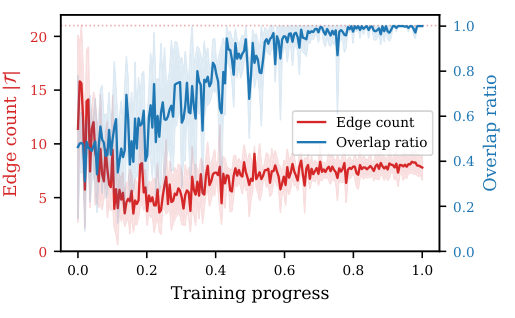
<figcaption class="paper-figure-caption"><b>Fig 1.</b> Fig. 1. Training dynamics for 10-qubit instances (mean ± std over 5 seeds). The edge count decreases and stabilizes around 8 (out of 21 problem edges), while the overlap ratio—the fraction of selected edges belonging to the problem graph—rises from ∼0.5 to ∼1.0.</figcaption>
</figure>
<figure class="paper-figure-card">
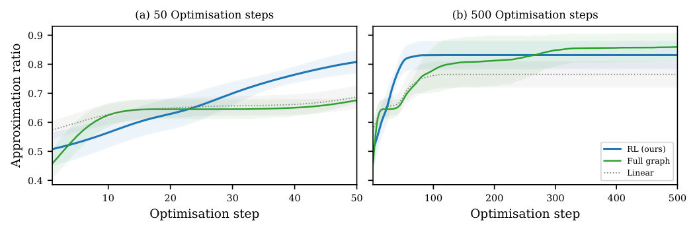
<figcaption class="paper-figure-caption"><b>Fig 2.</b> Fig. 2. QAOA optimization trajectories for different topologies on 10-qubit instances. (a) At 50 steps, the RL topology converges fastest and reaches the highest AR. (b) At 500 steps, the full graph topology eventually surpasses the RL topology, illustrating the trainability–expressibility trade-off.</figcaption>
</figure>
<figure class="paper-figure-card">
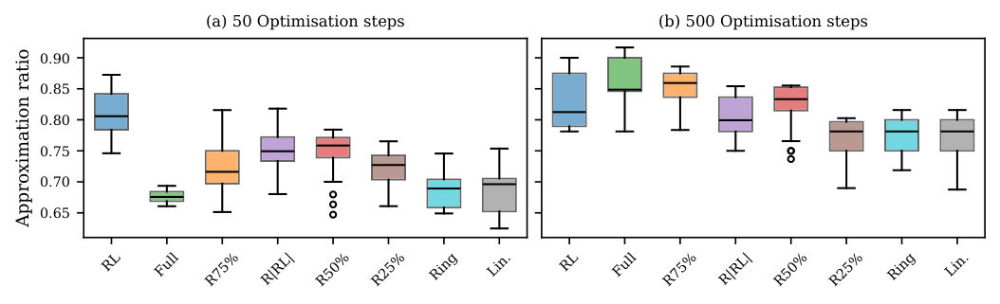
<figcaption class="paper-figure-caption"><b>Fig 3.</b> Fig. 3. Final approximation ratio distributions across topology types for 10-qubit instances. (a) At 50 optimization steps, the RL topology clearly dominates. (b) At 500 steps, the full topology achieves the best median AR.</figcaption>
</figure>
</div>

<p><strong>Summary.</strong> This work uses Reinforcement Learning to train an agent that discovers optimal entanglement topologies for QAOA optimization on MaxCut problems. By limiting the agent's observation to only performance feedback (AR), it learns to select sparse gate connections that align closely with the true problem graph structure. This reveals a critical trade-off: topology choice dictates convergence speed, suggesting the variational landscape itself contains structural information about the underlying physics.</p>
<p><strong>Why it may be interesting.</strong> It provides a novel computational paradigm for circuit design in quantum algorithms, showing how machine learning can probe underlying structural information of Hamiltonians without explicit knowledge, which is relevant for hardware-efficient ansatz design.</p>
<details>
<summary>Detailed structure</summary>
<p><strong>Main problem.</strong> Investigating if a Reinforcement Learning (RL) agent can discover effective entanglement topologies for QAOA-based MaxCut optimization without direct access to the problem graph structure.</p>
<p><strong>Main result.</strong> The RL agent consistently discovers sparse, problem-aligned topologies that outperform full graph connectivity when the optimization budget is limited. This suggests the variational optimization landscape implicitly encodes structural information about the problem Hamiltonian.</p>
<p><strong>Method.</strong> An outer loop uses a Masked PPO agent to sequentially place IsingZZ entangling gates (topology discovery), while an inner loop optimizes QAOA parameters using the resulting topology, returning the approximation ratio as a sparse terminal reward.</p>
<p><strong>Model / system.</strong> The system is based on the Quantum Approximate Optimization Algorithm (QAOA) applied to MaxCut, which maps to an Ising Hamiltonian. The RL agent learns to select the entanglement topology $T$ that governs the circuit structure.</p>
<p><strong>Key observables.</strong> Approximation Ratio (AR), Overlap Ratio ($|T \cap E|/|T|$), Meyer–Wallach Entanglement Measure ($Q$).</p>
<p><strong>Important parameters / regimes.</strong> Optimization budget (e.g., 50 vs. 500 gradient steps) and circuit depth ($p=1$ vs. $p>1$).</p>
<p><strong>Assumptions / limitations.</strong> The agent's observation space is intentionally limited to placed edges and the current AR, withholding explicit problem graph structure information.</p>
<p><strong>Figures summary.</strong> Figures illustrate training dynamics showing how edge count and overlap ratio evolve over time; tables compare performance metrics across different optimization budgets and circuit depths.</p>
<p><strong>Paper structure.</strong> The paper establishes the QAOA framework, defines the RL formulation (MDP), details the agent's interaction with the inner VQA optimizer, presents results comparing sparse vs. full topologies under varying resource constraints, and concludes by discussing the trainability-expressibility trade-off.</p>
</details>
<details>
<summary>Abstract</summary>
<p>In the Quantum Approximate Optimization Algorithm (QAOA), the entanglement topology, where qubit pairs are connected by two-qubit gates, is conventionally set equal to the edge set of the problem graph. This coupling ties circuit design to explicit problem knowledge and may not yield the most trainable circuit under limited optimization budgets. We investigate whether a reinforcement learning (RL) agent can discover more effective entanglement topologies for QAOA-based MaxCut optimization without direct access to the problem graph. A Masked Proximal Policy Optimization agent sequentially places IsingZZ gates to construct a circuit topology, while a variational inner loop optimizes the resulting QAOA parameters and returns the approximation ratio as a sparse terminal reward. The agent's observation contains only the edges placed so far and the current approximation ratio; graph structure can only be inferred indirectly through the optimization reward. On Erdős--Rényi instances with up to $10$~qubits, the agent consistently converges to topologies that are strict subsets of the problem graph, achieving overlap ratios approaching $1.0$, despite receiving no explicit information about the graph structure in its observations. These sparse, problem-aligned topologies outperform the full graph topology and several structural baselines when the optimization budget is limited ($50$~gradient steps), but are overtaken by denser topologies given sufficient optimization budget. Our results reveal a trainability--expressibility trade-off governed by topology density and suggest that the variational optimization landscape implicitly encodes structural information about the problem Hamiltonian.</p>
</details>
<p><sub><a href="#top">↑ back to top</a></sub></p>

<p><a id="paper-2608.08498"></a></p>
<h3 id="excitron-induced-pair-fluctuations-reveal-superconductivity-in-the-electron-gas"><a href="http://arxiv.org/abs/2608.08498v1">Excitron-Induced Pair Fluctuations Reveal Superconductivity in the Electron Gas</a></h3>
<p><strong>Authors:</strong> Yasutami Takada<br>
<strong>Type:</strong> theory · <strong>Category:</strong> strongly correlated electrons · <strong>PDF:</strong> <a href="https://arxiv.org/pdf/2608.08498v1">https://arxiv.org/pdf/2608.08498v1</a><br>
<strong>Analysis basis:</strong> full PDF text, analyzed in chunks
<strong>Topic relevance:</strong> <code>Keldysh / 2PI / non-Gaussian methods</code> <strong>1/5</strong></p>
<div class="figure-strip-hint">↔ Scroll figures horizontally</div>
<div class="paper-figures-scroll">
<figure class="paper-figure-card">
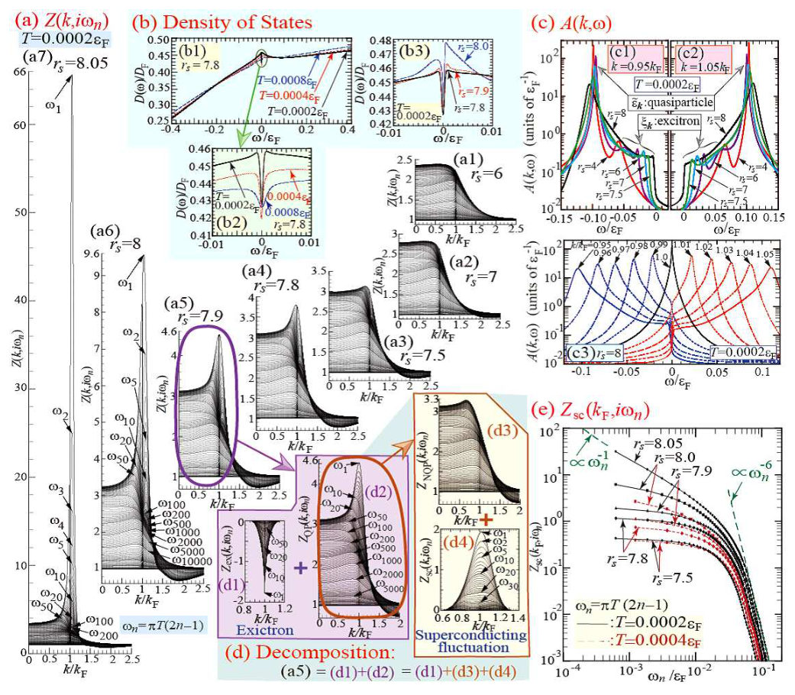
<figcaption class="paper-figure-caption"><b>Fig 1.</b> FIG. 1. (a) Renormalization function Z(k, iωn) at T/εF = 0.0002 for rs = 6 −8.05 [panels (a1)-(a7)]. A sharp peak develops near k ≈kF at rs ≈8, signaling a phase transition. (b) Density of states D(ω) near the Fermi level: for rs = 7.8, T/εF = 0.0002 −0.0008 [panels (b1),(b2)], and for T/εF = 0.0002, rs = 7.8 −8.0 [panel (b3)]. A pseudogap appears, indicating superconducting-gap formation. (c) Spectral function A(k, ω) at T/εF = 0.0002 for rs = 4 −8. Panels (c1),(c2) (k/kF = 0.95, 1.05) show that the QP dispersion ˜εk is nearly rs-independent, whereas the QP lifetime τ, excitron dispersion ξk, and excitron line shape vary strongly. At rs = 8 [panel (c3)], a broad QP peak and an excitron...</figcaption>
</figure>
<figure class="paper-figure-card">
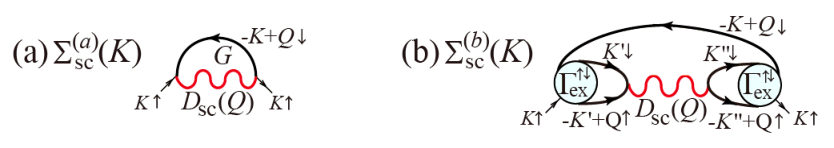
<figcaption class="paper-figure-caption"><b>Fig 2.</b> FIG. 2. Self-energy diagrams for up-spin electrons arising from (a) 3D superconducting fluctuations and (b) 1D ones in the presence of an excitron. Solid lines denote G, wavy lines Dsc, and Γ↑↓ ex is the excitron forming interaction vertex.</figcaption>
</figure>
<figure class="paper-figure-card">
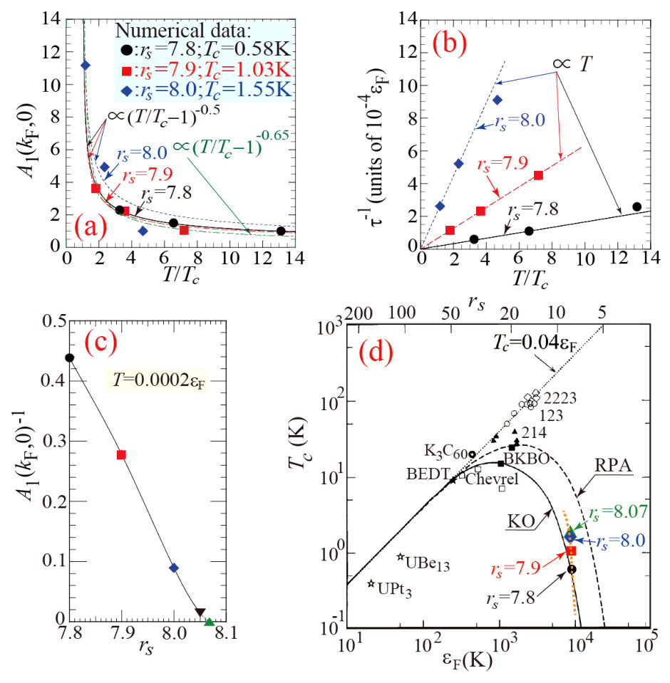
<figcaption class="paper-figure-caption"><b>Fig 3.</b> FIG. 3. (a) Strength of the 1D superconducting-fluctuation contribution at ωn = 0, A1(kF, 0), versus T/Tc for rs = 7.8 −8.0 with the corresponding Tc values indicated. The scaling A1(kF, 0) ∝ξ(T ) is reasonably satisfied. The coherence length follows ξ(T ) ∝(T/Tc−1)−ν, with ν = 0.5 for rs = 7.8 and 7.9, and ν = 0.65±0.05 for rs = 8.0. (b) Inverse QP lifetime τ −1 versus T/Tc for rs =7.8 −8.0. A linear T -dependence persists over a wide range. (c) A1(kF, 0)−1 versus rs at T/εF = 0.0002. Extrapolation gives A1(kF, 0)−1 →0 at rs ≈8.07, indicating the superconducting transition. (d) Four Tc values obtained at different rs in this study are plotted in Fig. 2 of Ref. [20]. The orange dotted curve...</figcaption>
</figure>
</div>

<p><strong>Summary.</strong> This theoretical study investigates the emergence of superconductivity in the dilute 3D electron gas by analyzing electronic self-energy fluctuations. The authors demonstrate that the superconducting pairing mechanism arises from virtual excitations involving excitons, leading to a distinct one-dimensional fluctuation channel. This provides an unexpected pathway for plasmon-driven superconductivity observable through pseudogaps and characteristic temperature dependencies.</p>
<p><strong>Why it may be interesting.</strong> The work provides an exotic mechanism for superconductivity in a clean electron gas, linking it to quasi-1D excitonic dynamics rather than phonons or simple Fermi liquid theory, which is highly relevant to understanding unconventional superconductors.</p>
<details>
<summary>Detailed structure</summary>
<p><strong>Main problem.</strong> The central challenge is understanding how superconductivity emerges in dilute electronic systems, specifically the 3D homogeneous electron gas (3DHEG), without relying on conventional phonon mechanisms.</p>
<p><strong>Main result.</strong> Superconductivity in the 3DHEG can be driven by superconducting fluctuations mediated by virtual excitons, revealing a second-order phase transition at specific densities and low temperatures.</p>
<p><strong>Method.</strong> The study employs first-principles calculations of the electron self-energy using the functional GWGamma (FGWGamma) method, analyzing singular behavior in fluctuation quantities.</p>
<p><strong>Model / system.</strong> The model is the three-dimensional homogeneous electron gas (3DHEG). The analysis focuses on decomposing the renormalization function Z(K) into contributions from normal quasi-particle physics, excitons, and superconducting fluctuations.</p>
<p><strong>Key observables.</strong> Renormalization function divergence (signaling phase transition), pseudogap in density of states D(omega), linear-in-T inverse electron lifetime ($    au^{-1}$), and the exciton spectral shape evolution.</p>
<p><strong>Important parameters / regimes.</strong> Density parameter $r_s \approx 8$ and low temperatures, e.g., $T \approx 10^{-4}E_F$.</p>
<p><strong>Assumptions / limitations.</strong> The analysis assumes that superconducting fluctuations are effectively one-dimensional (1D) due to phase-space restrictions imposed by the excitonic mechanism.</p>
<p><strong>Figures summary.</strong> Figures illustrate the divergence of Z(K) near $r_s \approx 8$, showing pseudogaps in D(omega), and comparing the theoretical self-energy contributions from standard 3D fluctuations versus the novel exciton-induced 1D fluctuations.</p>
<p><strong>Paper structure.</strong> The paper progresses by establishing the problem (superconductivity in dilute systems), applying advanced many-body techniques (FGWGamma) to find divergences, identifying that excitons mediate these fluctuations via a specific 1D channel ($\Sigma^{(b)}_{sc}$), and finally determining critical parameters like $   au^{-1}$ through frequency extrapolation.</p>
</details>
<details>
<summary>Abstract</summary>
<p>Understanding how superconductivity can emerge in dilute electronic systems remains a central challenge in condensed matter physics. By performing first-principles calculations of the electron self-energy Σ(k,iw_n) in the low-density three-dimensional electron gas, we identify a sharp divergence at r_s ~ 8 and T ~ 10^{-4}E_ F, signaling a second-order phase transition. This critical behavior originates from one-dimensional superconducting fluctuations mediated by virtual excitations of an excitron---a quasi-1D electronic composite formed by an electron and longitudinal electron-hole pairs. Although the superconducting mechanism itself is plasmon-mediated, the excitron channel provides a unique window into its fluctuation dynamics. Near the transition, we observe a pseudogap and a linear-in-T inverse electron lifetime, reminiscent of phenomena in high-T_c materials. These results reveal an unexpected route by which plasmon-driven superconductivity manifests in the dilute 3D electron gas through quasi-1D excitron dynamics.</p>
</details>
<p><sub><a href="#top">↑ back to top</a></sub></p>

<p><a id="paper-2608.07655"></a></p>
<h3 id="fuzzy-spectroscopy-of-bound-states-in-massive-quantum-field-theories"><a href="http://arxiv.org/abs/2608.07655v1">Fuzzy Spectroscopy of Bound States in Massive Quantum Field Theories</a></h3>
<p><strong>Authors:</strong> Joseph Taylor, Matthew Yusuf, Zlatko Papić<br>
<strong>Type:</strong> theory · <strong>Category:</strong> statistical mechanics · <strong>PDF:</strong> <a href="https://arxiv.org/pdf/2608.07655v1">https://arxiv.org/pdf/2608.07655v1</a><br>
<strong>Analysis basis:</strong> full PDF text, analyzed in chunks
<strong>Topic relevance:</strong> <code>Keldysh / 2PI / non-Gaussian methods</code> <strong>1/5</strong></p>
<div class="figure-strip-hint">↔ Scroll figures horizontally</div>
<div class="paper-figures-scroll">
<figure class="paper-figure-card">
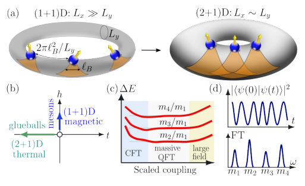
<figcaption class="paper-figure-caption"><b>Fig 1.</b> FIG. 1. Fuzzy spectroscopy. (a) In the Landau gauge, the LLL orbitals are Gaussians whose width is set by the mag- netic length ℓB, while their centers are separated by 2πℓ2 B/Ly. Varying Ly tunes the overlap of these orbitals continuously from an effectively (1+1)D thin-torus chain to an isotropic (2+1)D geometry. (b) Magnetic and thermal perturbations to the Ising fixed point generate meson and glueball excita- tions. (c) Universal meson and glueball mass ratios emerge in a massive-QFT scaling window between the CFT-dominated and magnetic-field-dominated regimes. (d) The same excita- tions can be detected in the quench dynamics as peaks in the Fourier spectrum of the return fidelity.</figcaption>
</figure>
<figure class="paper-figure-card">
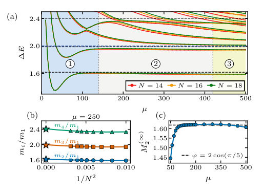
<figcaption class="paper-figure-caption"><b>Fig 2.</b> FIG. 2. (1 + 1)D Ising benchmark. (a) Thin-torus energy spectrum versus µ = hzL15/8 x for different N. Regions 1 ○and 3 ○are dominated, respectively, by residual CFT structure and microscopic large-field corrections, while 2 ○is the universal massive scaling regime. Horizontal dashed lines mark exact E8 ratios and the continuum threshold. All gaps are divided by the lightest mass m1. (b) N →∞extrapolation of m2/m1, m3/m1, and m4/m1 at µ = 250. At this field, the tracked m4 branch is the third energy-ranked level above m3 in panel (a). Curves are quadratic least-squares fits in 1/N 2, while stars mark the exact E8 values. (c) Continuum estimate M (∞) 2 = limN→∞m2/m1as a function of µ,...</figcaption>
</figure>
<figure class="paper-figure-card">
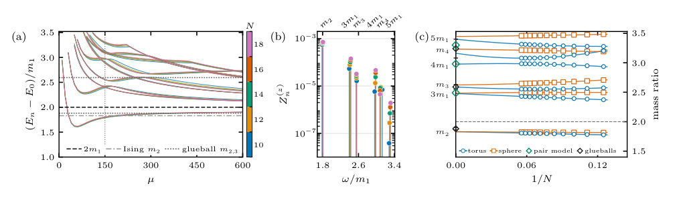
<figcaption class="paper-figure-caption"><b>Fig 3.</b> FIG. 3. Continuum finite-volume (2+1)D Ising spectroscopy. (a) Square-torus spectra at D = 0 for different N (color bar) as a function of µ. The vertical line marks µ = 150. Horizontal lines mark the continuum threshold (dashed), the 1.83m1 Ising estimate (dash-dotted) [8], and the 1.88m1 and 2.594m1 glueball estimates (dotted) [9, 83]. (b) The levels contributing to DSF, Eq. (5), at µ = 150 for the same sizes as in (a), with stem heights given by Z(z) n . Top labels denote the six bound states identified in (c). (c) DSF-selected finite-volume gap ratios on the torus (µ = 150, open circles) and sphere (µ = 26, open squares). All plotted sphere sequences have L = 0; for the 4m1 torus level,...</figcaption>
</figure>
<figure class="paper-figure-card">
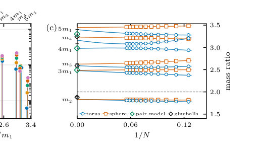
<figcaption class="paper-figure-caption"><b>Fig 4.</b> Figure 3(b) plots the weights Z(z) n at µ = 150 for the same system sizes as in panel (a). Because both the ground state and Sz transform in the fully symmetric A1 representation of the square point group [82], every displayed pole belongs to the A1 sector. Across the ac- cessible N, the DSF isolates a subthreshold scalar level at m2/m1 ≃1.8 together with higher DSF peaks above the continuum threshold. Figure 3(c) follows the levels with nonzero DSF weight as N →∞. The extrapolations are consistent with pre- vious glueball mass estimates in the literature, also indi- cated on the plot. As an independent check, we also per- form extrapolations using the topologically-distinct fuzzy sphere...</figcaption>
</figure>
<figure class="paper-figure-card">
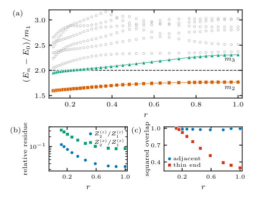
<figcaption class="paper-figure-caption"><b>Fig 5.</b> FIG. 4. Dimensional crossover of the QFT spectrum. (a) Rescaled energy spectrum as a function of aspect ratio r at fixed size N = 14, hz = 0.5, and hx tuned to the finite-size critical line [82]. Filled symbols are overlap-tracked branches, open circles are all other levels, and the dashed line is the continuum threshold. The level m2 interpolates smoothly be- tween the 1D and 2D, while m3 enters the continuum around r ≈0.2. (b) DSF matrix element ratio for m1 and m2 lev- els. (c) Squared overlaps of the m2 state at ratio r with the adjacent state at r + ∆r or with the thin-limit state at the smallest r. The former shows adiabatic continuity, the latter illustrates the largely different...</figcaption>
</figure>
</div>

<p><strong>Summary.</strong> The paper develops fuzzy geometry as a novel nonperturbative probe to calculate the bound state spectrum of massive Quantum Field Theories. By analyzing systems on fuzzy tori and spheres, the authors demonstrate how spectral features evolve continuously during dimensional crossover from 1D to 2D. This establishes a robust theoretical framework for studying QFTs in regimes inaccessible by standard methods.</p>
<p><strong>Why it may be interesting.</strong> This work provides a powerful theoretical tool—fuzzy geometries—to study complex many-body physics (bound states) in QFTs without relying solely on computationally intensive lattice methods, making it relevant for understanding critical phenomena and continuum limits.</p>
<details>
<summary>Detailed structure</summary>
<p><strong>Main problem.</strong> The primary goal is performing nonperturbative spectroscopy of bound states (like mesons and glueballs) in massive Quantum Field Theories (QFTs), especially when moving beyond one spatial dimension.</p>
<p><strong>Main result.</strong> Fuzzy geometries are established as a robust, nonperturbative method to probe the spectrum of massive QFTs, successfully tracking excitations through dimensional crossover from 1D to 2D while reproducing known theoretical mass ratios.</p>
<p><strong>Method.</strong> The authors use regularization based on noncommutative 'fuzzy' geometry (fuzzy torus/sphere) to calculate energy spectra and analyze dynamical structure factors. They employ finite-size scaling and continuum extrapolation techniques.</p>
<p><strong>Model / system.</strong> The study uses the Ising QFT as an illustrative model, analyzing its bound states in $(1+1)$D and $(2+1)$D dimensions. The physics is mapped onto spinful electrons confined to a fuzzy torus or sphere geometry.</p>
<p><strong>Key observables.</strong> Low-lying energy spectrum ($E_n$), mass ratios ($m_i/m_1$), normalized dynamical structure factor (DSF), and critical fields ($h_c^x$).</p>
<p><strong>Important parameters / regimes.</strong> The aspect ratio of the torus ($r=L_y/L_x$) is crucial for dimensional crossover; scaling variables like $D$ and $\mu$ define different physical regimes.</p>
<p><strong>Assumptions / limitations.</strong> The method assumes that fuzzy geometries provide a valid, nonperturbative regularization scheme allowing continuous tracking across dimensions. The analysis also relies on specific symmetry filtering ($   ext{A}_1$) to isolate relevant spectral components.</p>
<p><strong>Figures summary.</strong> Figures illustrate the spectrum evolution (e.g., Fig. 4) as the torus aspect ratio changes; they show mass ratios approaching plateaus in scaling windows (Fig. 2); and they detail spectral weight transfer during avoided crossings on the sphere (Fig. S5).</p>
<p><strong>Paper structure.</strong> The paper systematically develops the methodology by first establishing benchmarks in 1D, then analyzing dimensional crossover using varying aspect ratios on the torus, and finally applying the technique to the fuzzy sphere geometry while performing finite-size scaling analysis.</p>
</details>
<details>
<summary>Abstract</summary>
<p>Mesons and glueballs are paradigmatic bound states of confining quantum field theories (QFTs), but their nonperturbative spectroscopy in the continuum remains challenging beyond one spatial dimension. Here we perform such spectroscopy for the Ising QFT using a recently developed regularization based on noncommutative ``fuzzy'' geometry. On a thin fuzzy torus, we reproduce the universal low-lying $\mathbb E_8$ meson masses of the magnetically perturbed $(1{+}1)\mathrm{D}$ Ising QFT. By increasing the torus aspect ratio, we continuously track the second-lightest $\mathbb E_8$ meson as the system effectively crosses over from 1D to 2D. On the 2D fuzzy torus and sphere, we find a subthreshold scalar level and above-threshold response features consistent with previous estimates of glueball masses. The same excitations are revealed away from equilibrium using quench dynamics. Our results establish fuzzy geometries as nonperturbative spectroscopic probes of massive QFTs, including their bound-state evolution through dimensional crossover.</p>
</details>
<p><sub><a href="#top">↑ back to top</a></sub></p>

<p><a id="paper-2608.09504"></a></p>
<h3 id="genuinely-unextendible-product-bases-from-maximum-distance-separable-codes"><a href="http://arxiv.org/abs/2608.09504v1">Genuinely Unextendible Product Bases from Maximum Distance Separable Codes</a></h3>
<p><strong>Authors:</strong> Mao-Sheng Li<br>
<strong>Type:</strong> theory · <strong>Category:</strong> quantum information and computing · <strong>PDF:</strong> <a href="https://arxiv.org/pdf/2608.09504v1">https://arxiv.org/pdf/2608.09504v1</a><br>
<strong>Analysis basis:</strong> full PDF text, analyzed in chunks
<strong>Topic relevance:</strong> <code>quantum measurements</code> <strong>1/5</strong></p>
<div class="figure-strip-hint">↔ Scroll figures horizontally</div>
<div class="paper-figures-scroll">
<figure class="paper-figure-card">
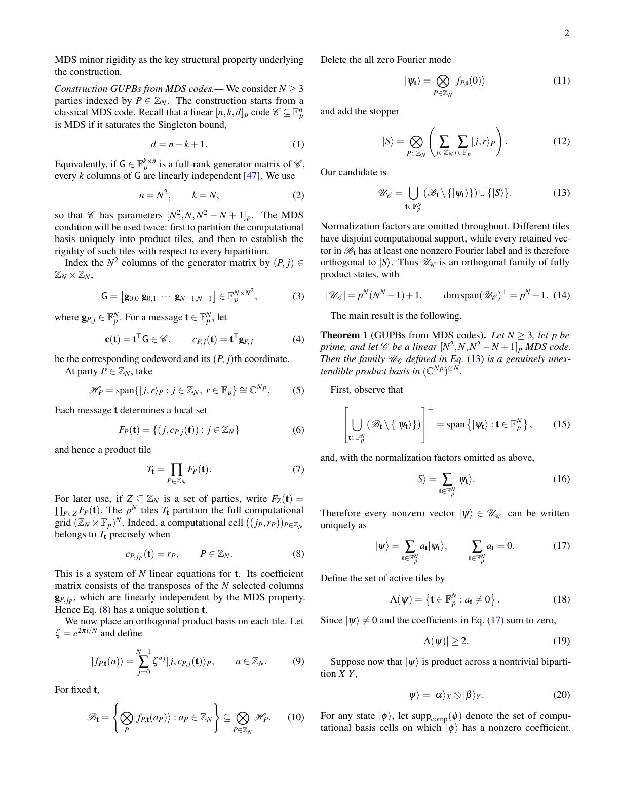
<figcaption class="paper-figure-caption"><b>Fig 1.</b> Low-resolution page preview, page 2</figcaption>
</figure>
<figure class="paper-figure-card">
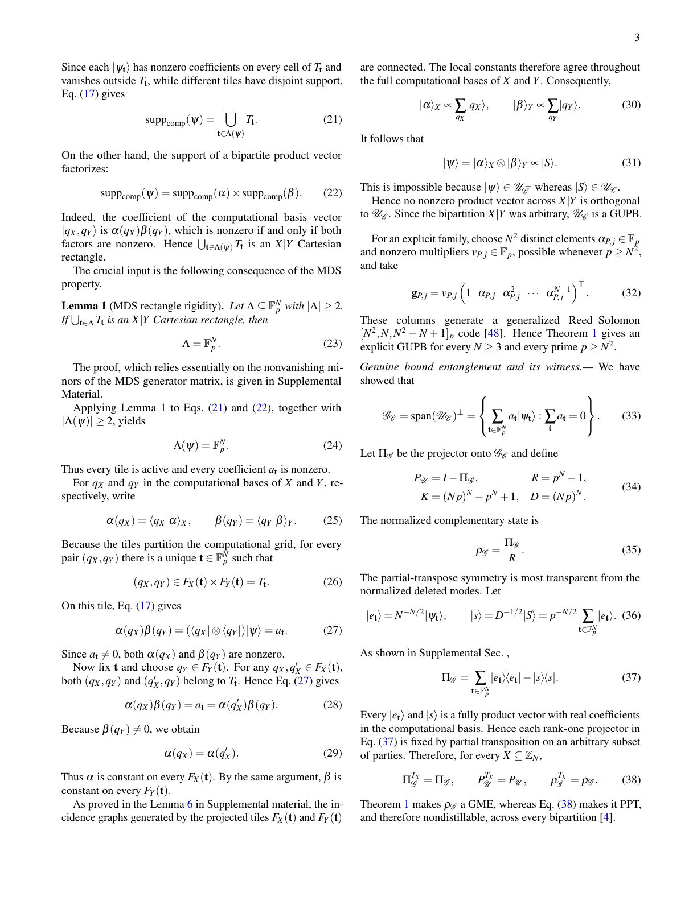
<figcaption class="paper-figure-caption"><b>Fig 2.</b> Low-resolution page preview, page 3</figcaption>
</figure>
<figure class="paper-figure-card">
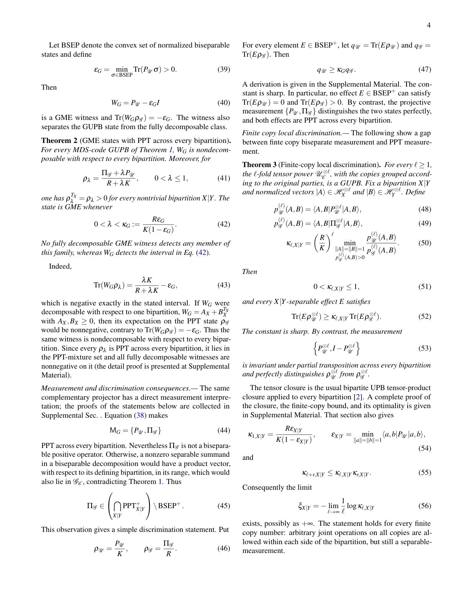
<figcaption class="paper-figure-caption"><b>Fig 3.</b> Low-resolution page preview, page 4</figcaption>
</figure>
<figure class="paper-figure-card">
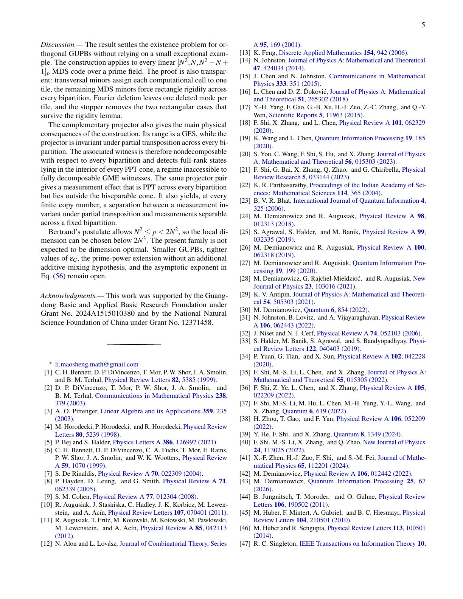
<figcaption class="paper-figure-caption"><b>Fig 4.</b> Low-resolution page preview, page 5</figcaption>
</figure>
<figure class="paper-figure-card">

<figcaption class="paper-figure-caption"><b>Fig 5.</b> Low-resolution page preview, page 6</figcaption>
</figure>
</div>

<p><strong>Summary.</strong> This work constructs Genuinely Unextendible Product Bases (GUPBs) using mathematical structures derived from Maximum Distance Separable (MDS) error-correcting codes. These bases define complementary subspaces that are proven to host genuinely multipartite bound entangled states. The paper provides both an explicit construction and rigorous tools, like specialized entanglement witnesses, to certify this non-local entanglement.</p>
<p><strong>Why it may be interesting.</strong> The direct link established between classical error-correcting codes (MDS codes) and certifying genuine multipartite entanglement provides a powerful, algebraic tool for quantum information theory.</p>
<details>
<summary>Detailed structure</summary>
<p><strong>Main problem.</strong> The paper addresses the open problem of constructing Genuinely Unextendible Product Bases (GUPBs) for $N \ge 3$ parties and establishing a deep connection between these bases and multipartite entanglement.</p>
<p><strong>Main result.</strong> An explicit family of GUPBs is constructed using classical Maximum Distance Separable (MDS) codes, which in turn yields an algebraic route to certifying genuinely multipartite bound entangled states.</p>
<p><strong>Method.</strong> The construction relies on the rigidity imposed by MDS codes on product tilings, combined with Fourier mode deletion and a 'stopper' state to prove genuine unextendibility via orthogonality arguments.</p>
<p><strong>Model / system.</strong> The system involves multipartite quantum states in $(\mathbb{C}^{p})^{\otimes N}$, analyzed through orthogonal product bases ($\mathcal{U}_C$) whose complementary subspace is shown to host bound entanglement.</p>
<p><strong>Key observables.</strong> GUPBs, genuinely entangled subspaces (GES), GME witnesses, and the discrimination constant $\kappa_{\ell, X|Y}$.</p>
<p><strong>Important parameters / regimes.</strong> $N \ge 3$ parties; prime field $\mathbb{F}_p$ with $p \ge N^2$; finite tensor powers ($\otimes^\ell$).</p>
<p><strong>Assumptions / limitations.</strong> The construction requires the existence of suitable MDS codes and relies on algebraic properties derived from orthogonality relations.</p>
<p><strong>Figures summary.</strong> Not specified by notes, but the analysis involves projector operators ($\Pi_G$, $P_U$) and discrimination bounds $\kappa_{\ell, X|Y}$.</p>
<p><strong>Paper structure.</strong> The paper progresses from establishing the GUPB construction using MDS codes (Chunk 1), to proving the entanglement properties of the complementary subspace via orthogonality conditions (Chunk 2), then detailing distinguishability criteria and witnesses (Chunk 3), and finally analyzing stability under tensor products (Chunk 4).</p>
</details>
<details>
<summary>Abstract</summary>
<p>The existence of genuinely unextendible product bases (GUPBs), incomplete orthogonal sets of fully product states whose orthogonal complements contain no product vector across any bipartition, has remained an open problem. Here we construct GUPBs for any number $N\geq3$ of parties using classical maximum distance separable (MDS) codes. The MDS property imposes a rigidity on the induced product tiling across every bipartition; combined with Fourier mode deletion and a stopper state, this rigidity enforces genuine unextendibility. Consequently, the orthogonal complement of each GUPB is a genuinely entangled subspace whose normalized projector is invariant under partial transposition across every bipartition, yielding an explicit family of multipartite bound entangled states. We further construct GME witnesses that detect these states even though no fully decomposable witness can do so. Moreover, the resulting indistinguishability persists under arbitrary finite tensor powers and measurements separable across any bipartition. These results establish a direct connection between error-correcting codes and multipartite entanglement and provide an algebraic route to certifying genuinely multipartite bound entanglement.</p>
</details>
<p><sub><a href="#top">↑ back to top</a></sub></p>

<p><a id="paper-2608.08546"></a></p>
<h3 id="lee-yang-theory-guided-force-field-refinement-based-on-phase-diagrams"><a href="http://arxiv.org/abs/2608.08546v1">Lee-Yang Theory Guided Force Field Refinement Based on Phase Diagrams</a></h3>
<p><strong>Authors:</strong> Bin Jin, Qijun Ye, Xinzheng Li, Kuang Yu, Shenzhen Xu<br>
<strong>Type:</strong> theory · <strong>Category:</strong> statistical mechanics · <strong>PDF:</strong> <a href="https://arxiv.org/pdf/2608.08546v1">https://arxiv.org/pdf/2608.08546v1</a><br>
<strong>Analysis basis:</strong> full PDF text, analyzed in chunks
<strong>Topic relevance:</strong> <code>driven-dissipative phase transition</code> <strong>1/5</strong></p>
<div class="figure-strip-hint">↔ Scroll figures horizontally</div>
<div class="paper-figures-scroll">
<figure class="paper-figure-card">
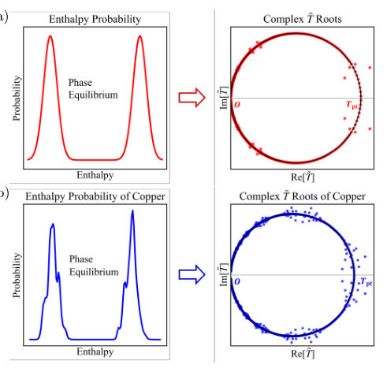
<figcaption class="paper-figure-caption"><b>Fig 1.</b> FIG. 1. Schematic illustration of the Lee-Yang circle theo- rem in the complex temperature plane. (a) Ideal case: for a system exhibiting a double-peak equilibrium enthalpy dis- tribution (left) with a phase transition at Tpt, the Lee-Yang zeros most directly associated with the phase transition dis- tribute on a circle with diameter connecting the origin and Tpt [21] (right). (b) A realistic case for Cu, confirming this geometric picture.</figcaption>
</figure>
<figure class="paper-figure-card">
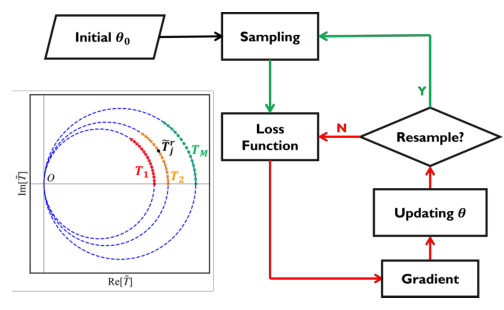
<figcaption class="paper-figure-caption"><b>Fig 2.</b> FIG. 2. Schematic workflow of the Lee-Yang-guided force field refinement framework. The left inset depicts points ˜T r j on the Lee-Yang circle, used to evaluate the partition function mod- ulus and form a differentiable loss function minimized via au- tomatic differentiation. Points of different colors correspond to different Lee-Yang zero circles for distinct target thermo- dynamic conditions.</figcaption>
</figure>
<figure class="paper-figure-card">
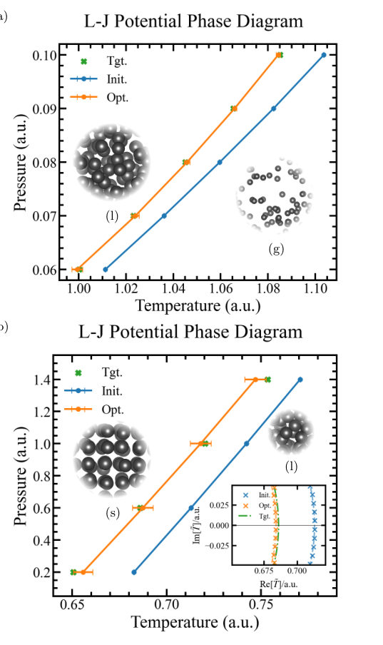
<figcaption class="paper-figure-caption"><b>Fig 3.</b> FIG. 3. L-J system phase diagram optimization results. (a) Gas-liquid coexistence curves predicted by the initial force field (blue curve with points), refined force field (orange curve with points), and the target phase transition points (green crosses). (b) Solid-liquid coexistence curves with the same color scheme. The inset in (b) shows the evolution of Lee- Yang zeros near the real axis in the complex temperature plane at p = 0.60 a.u.: initial force field (blue crosses), refined force field (orange crosses), and the target Lee-Yang circle (green dashed line). Structures in figures are snapshots from simulations. (Same in Fig. 4.)</figcaption>
</figure>
<figure class="paper-figure-card">
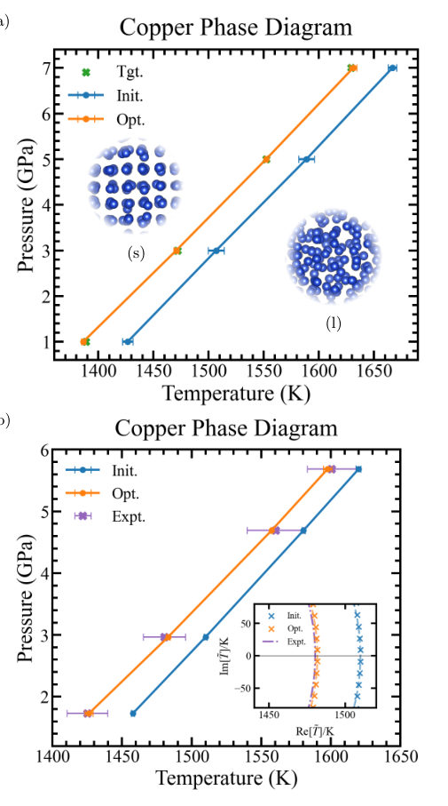
<figcaption class="paper-figure-caption"><b>Fig 4.</b> FIG. 4. Cu EAM system optimization results. (a) Melting curve for the simulated reference target, comparing the initial force field (blue curve with points), refined force field (orange curve with points), and reference data (green crosses). (b) Melting curve for the experimental target, comparing the ini- tial force field (blue curve with points), refined force field (orange curve with points), and experimental data (violet crosses) [27]. The inset shows the evolution of Lee-Yang zeros near the real axis in the complex temperature plane at pres- sure p = 2.97 GPa for the experimental target: initial force field (blue crosses), refined force field (orange crosses), and the target Lee-Yang...</figcaption>
</figure>
<figure class="paper-figure-card">
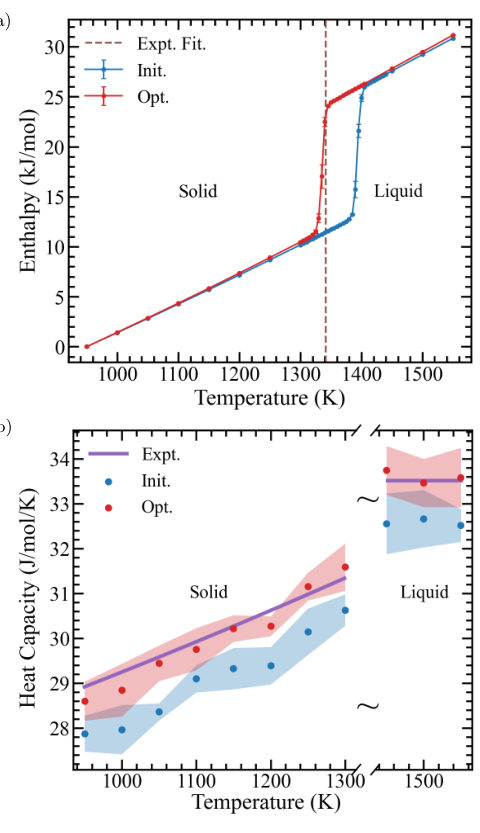
<figcaption class="paper-figure-caption"><b>Fig 5.</b> FIG. 5. Thermodynamic validation for Cu at p = 1 bar. (a) Enthalpy H(T) and (b) isobaric heat capacity Cp(T) spanning the solid and liquid phases. In panel (a), the blue and red curves with points represent the enthalpies predicted by the initial and refined force fields, respectively. The brown dashed line denotes the ambient-pressure melting point obtained by extrapolating the experimental optimization targets [27] via the Simon equation. In panel (b), the blue and red points represent the isobaric heat capacities predicted by the initial and refined force fields, respectively, with semi-transparent bands indicating the uncertainty of each point. The violet line shows the experimental...</figcaption>
</figure>
</div>

<p><strong>Summary.</strong> This paper introduces a novel method to automatically refine interatomic potentials by leveraging Lee-Yang theory. It treats phase transitions as singularities in the partition function, using the modulus of this function as a differentiable target during optimization. The technique successfully improves predictions for both simple models and metallic systems by enforcing consistency with known phase diagrams.</p>
<p><strong>Why it may be interesting.</strong> While focused on classical condensed matter, the reliance on complex analysis (Lee-Yang zeros) and differentiable optimization techniques makes this methodology highly relevant for developing machine learning force fields that require rigorous thermodynamic constraints.</p>
<details>
<summary>Detailed structure</summary>
<p><strong>Main problem.</strong> Developing a general, automated framework for refining interatomic force fields by guiding the optimization process using information derived from known phase diagrams.</p>
<p><strong>Main result.</strong> The proposed method successfully refines potentials (L-J and EAM) such that the predicted Lee-Yang zeros accurately map onto target coexistence curves, significantly improving predictions of thermodynamic properties like enthalpy and heat capacity.</p>
<p><strong>Method.</strong> It uses Lee-Yang theory to treat phase transitions as singularities in the partition function. The refinement minimizes a loss function based on the modulus of the partition function evaluated at points near the predicted Lee-Yang zeros in the complex temperature plane.</p>
<p><strong>Model / system.</strong> The method is applied to classical molecular simulations, specifically refining parameters for Lennard-Jones potentials (gas-liquid and solid-liquid) and Embedded-Atom Method potentials (Cu metal).</p>
<p><strong>Key observables.</strong> Partition function modulus ($\vert 	ilde{Z} \vert$), phase transition temperatures ($T_{coex}$), enthalpy $H(T)$, and isobaric heat capacity $C_p(T)$.</p>
<p><strong>Important parameters / regimes.</strong> The optimization targets are defined by the Lee-Yang circle theorem, requiring input of a known phase diagram boundary.</p>
<p><strong>Assumptions / limitations.</strong> The core assumption is that minimizing $\vert 	ilde{Z} \vert$ at points on the Lee-Yang circle correctly guides the force field parameters toward the true thermodynamic equilibrium state.</p>
<p><strong>Figures summary.</strong> Figures illustrate the theoretical concept of Lee-Yang zeros forming a circle in the complex plane, show optimization results comparing initial vs. refined phase diagrams (L-J), and validate improved predictions for $H(T)$ and $C_p(T)$ against experimental data (Cu).</p>
<p><strong>Paper structure.</strong> The paper introduces the framework using Lee-Yang theory to guide force field refinement. It details the mathematical construction of the loss function based on the partition function modulus, validates it on L-J systems for multiple transitions, and extends its applicability to metallic potentials like Cu.</p>
</details>
<details>
<summary>Abstract</summary>
<p>We propose a general framework for automatic force field refinement guided by phase diagrams, grounded in Lee-Yang phase transition theory. The central idea is to directly use the partition function modulus as a phase-diagram-guided optimization target. Evaluating the modulus at points close to the real axis, where the Lee-Yang zeros are mostly associated with the phase transition, is more physically meaningful and avoids the numerical difficulty of explicitly solving for the zeros. This approach requires no system-specific order parameters or response properties for characterizing phase transition points, making it universal across various discontinuous phase transitions and material systems. We validate the method on refining parameters of a Lennard-Jones potential covering both gas-liquid and solid-liquid transitions, and a Cu embedded-atom method potential based on experimental melting curves. The refined force fields reproduce the target phase diagrams with significant improvement across all systems. For Cu, the refinement simultaneously improves predictions of enthalpy and heat capacity, which are observables beyond the optimization target. These results establish Lee-Yang theory as a practical tool for contemporary force field development.</p>
</details>
<p><sub><a href="#top">↑ back to top</a></sub></p>

<p><a id="paper-2608.08280"></a></p>
<h3 id="machine-learning-for-specialized-qkd-aspects-a-survey-of-adaptive-protocols-free-space-links-6g-integration-and-steerability-aware-security"><a href="http://arxiv.org/abs/2608.08280v1">Machine Learning for Specialized QKD Aspects: A Survey of Adaptive Protocols, Free-Space Links, 6G Integration, and Steerability-Aware Security</a></h3>
<p><strong>Authors:</strong> Hasan Abbas Al-Mohammed, Afnan S. Al-Ali<br>
<strong>Type:</strong> theory · <strong>Category:</strong> quantum information and computing · <strong>PDF:</strong> <a href="https://arxiv.org/pdf/2608.08280v1">https://arxiv.org/pdf/2608.08280v1</a><br>
<strong>Analysis basis:</strong> full PDF text, analyzed in chunks
<strong>Topic relevance:</strong> <code>quantum measurements</code> <strong>1/5</strong></p>
<div class="figure-strip-hint">↔ Scroll figures horizontally</div>
<div class="paper-figures-scroll">
<figure class="paper-figure-card">
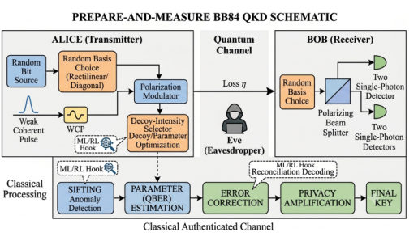
<figcaption class="paper-figure-caption"><b>Fig 1.</b> Fig. 1. Prepare-and-measure BB84 with decoy states, annotated with the post- processing chain and the ML/RL entry points treated in the survey.</figcaption>
</figure>
<figure class="paper-figure-card">
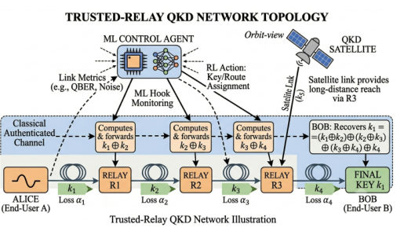
<figcaption class="paper-figure-caption"><b>Fig 2.</b> Fig. 3. Trusted-relay QKD network with XOR key forwarding. ML/RL agents optimize per-hop rates and network-level key routing for IoT/6G QKD (Theme III, Section VII).</figcaption>
</figure>
<figure class="paper-figure-card">
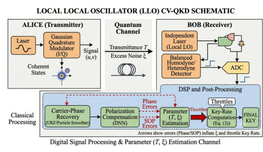
<figcaption class="paper-figure-caption"><b>Fig 3.</b> Fig. 2. Local-local-oscillator CV-QKD, highlighting the digital signal- processing stage where learned carrier-phase recovery, polarization compen- sation and parameter estimation are inserted.</figcaption>
</figure>
<figure class="paper-figure-card">
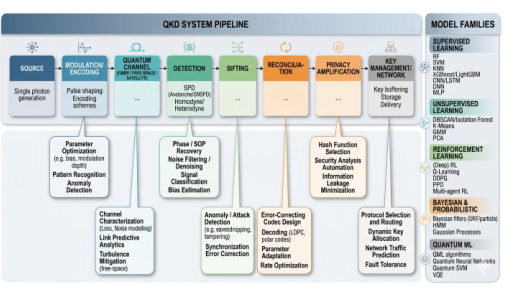
<figcaption class="paper-figure-caption"><b>Fig 4.</b> Fig. 4. Taxonomy mapping ML/RL/QML tasks onto specialized QKD aspects. The five themes—Adaptive Protocol/Parameter Support, Free- Space/Satellite/UAV/HAP, IoT/6G/Federated Learning, QML-Assisted Func- tions, and Steerability/1SDI Security—define the scope of this survey beyond conventional fiber-link QKD (Sections V–IX).</figcaption>
</figure>
<figure class="paper-figure-card">
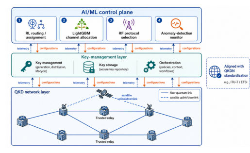
<figcaption class="paper-figure-caption"><b>Fig 5.</b> Fig. 5. Network-level view: an AI/ML control plane consuming link telemetry and orchestrating routing, allocation, protocol choice and monitoring across a hybrid fiber/satellite/HAP QKD network (Theme III, Section VII).</figcaption>
</figure>
</div>

<p><strong>Summary.</strong> This survey reviews the application of Machine Learning, Reinforcement Learning, and Quantum ML across specialized QKD scenarios beyond standard fiber links. It covers challenging environments like free-space, satellite, and 6G integration by organizing findings into five distinct thematic pillars. The work serves as a focused reference for developing adaptive and robust quantum communication systems.</p>
<p><strong>Why it may be interesting.</strong> It provides a comprehensive roadmap for applying advanced computational techniques (ML/RL) to solve practical engineering challenges in quantum communication networks, which is highly relevant to quantum optics and network theory.</p>
<details>
<summary>Detailed structure</summary>
<p><strong>Main problem.</strong> The need to extend Quantum Key Distribution (QKD) security beyond conventional point-to-point fiber links to diverse, specialized, and emerging real-world environments.</p>
<p><strong>Main result.</strong> The survey organizes the literature into five thematic pillars detailing how ML/RL/QML can enhance QKD in non-terrestrial, resource-constrained, and complex operational settings.</p>
<p><strong>Method.</strong> It systematically surveys existing research by structuring each theme around a Problem $
ightarrow$ Conventional Solution $
ightarrow$ ML/RL/QML Solution triad.</p>
<p><strong>Model / system.</strong> The focus is on QKD protocols (BB84, CV-QKD) applied across diverse physical channels including free-space links, satellite/UAV/HAP platforms, and integration with 6G/IoT networks.</p>
<p><strong>Key observables.</strong> Accuracy, Mean-Absolute-Percentage Error (MAPE), Quantum Bit Error Rate (QBER) reduction, and Secret Key Rate (SKR) improvement.</p>
<p><strong>Important parameters / regimes.</strong> Channel transmittance ($T$), excess noise ($\xi$), weather conditions, mobility rates, and key length/security bounds.</p>
<p><strong>Assumptions / limitations.</strong> The survey explicitly addresses the limitations of classical estimators assuming stationarity when applied to dynamic real-world links.</p>
<p><strong>Figures summary.</strong> Figures illustrate ML/RL integration points in BB84 chains (Fig. 1), CV-QKD signal processing (Fig. 2), and trusted-relay network optimization for HAP/6G QKD (Fig. 3).</p>
<p><strong>Paper structure.</strong> The paper is structured around five thematic pillars: adaptive protocols, free-space/satellite links, IoT/6G integration, QML assistance, and steerability-aware security estimation.</p>
</details>
<details>
<summary>Abstract</summary>
<p>Quantum Key Distribution (QKD) provides information-theoretic security grounded in the laws of quantum mechanics, yet practical deployment increasingly extends beyond conventional point-to-point fiber links. Several rapidly emerging QKD directions are often studied separately, including adaptive protocol and parameter support; free-space, satellite, UAV, and high-altitude platform (HAP) channels; integration with IoT and 6G networks; quantum-secured federated learning; Quantum Machine Learning (QML) assisted decision support; and steerability-aware estimation for one-sided device-independent QKD. This survey examines how Machine Learning (ML), Reinforcement Learning (RL), and QML address these specialized scenarios and organizes the literature into five thematic pillars: (I) adaptive protocol and parameter support; (II) free-space, satellite, UAV, and HAP-assisted QKD; (III) QKD for IoT, 6G, and quantum-secured federated learning; (IV) QML-assisted QKD functions; and (V) steerability-aware and one-sided device-independent QKD security estimation. For each theme, we follow a consistent problem, conventional solution, and ML/RL/QML solution structure and summarize reported gains using metrics such as accuracy, mean absolute percentage error, QBER reduction, and secret key rate improvement. We further provide thematic and cross-theme comparison tables and identify open challenges, including dataset scarcity, transferability across weather and mobility conditions, interpretability, trustworthy QML, and the boundary between ML-based decision support and security certification. This survey serves as a focused reference for adaptive, non-terrestrial, and application-integrated QKD systems.</p>
</details>
<p><sub><a href="#top">↑ back to top</a></sub></p>

<p><a id="paper-2608.09727"></a></p>
<h3 id="magic-state-distillation-via-codes-over-binary-extension-fields"><a href="http://arxiv.org/abs/2608.09727v1">Magic State Distillation via Codes over Binary Extension Fields</a></h3>
<p><strong>Authors:</strong> Anqi Gong, Christopher A. Pattison, Patrick Rall, Adam Wills<br>
<strong>Type:</strong> theory · <strong>Category:</strong> quantum information and computing · <strong>PDF:</strong> <a href="https://arxiv.org/pdf/2608.09727v1">https://arxiv.org/pdf/2608.09727v1</a><br>
<strong>Analysis basis:</strong> full PDF text, analyzed in chunks
<strong>Topic relevance:</strong> <code>quantum measurements</code> <strong>1/5</strong></p>
<div class="figure-strip-hint">↔ Scroll figures horizontally</div>
<div class="paper-figures-scroll">
<figure class="paper-figure-card">
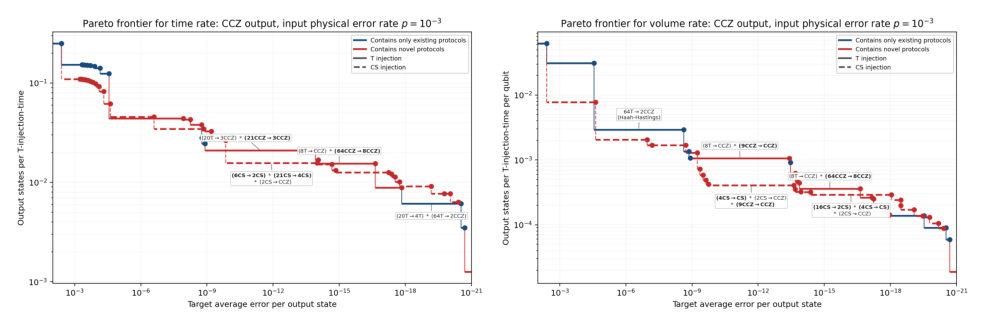
<figcaption class="paper-figure-caption"><b>Fig 1.</b> Figure 1: Pareto frontiers for physical input error p = 10−3. Solid lines use |T⟩state injection and dashed lines use |CS⟩state injection. Red lines indicate that our novel protocols are used somewhere in the competitive scheme; blue lines indicate that they are not. Our novel protocols are bolded in labels. Statistics for some of the competitive protocols are given in Appendix D.3.</figcaption>
</figure>
<figure class="paper-figure-card">
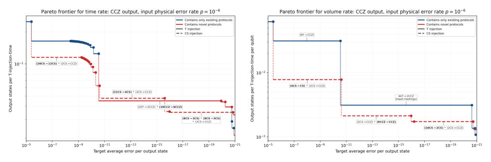
<figcaption class="paper-figure-caption"><b>Fig 2.</b> Figure 2: Pareto frontiers for physical input error p = 10−6 (modeling some small amount of cultivation pre-injection). Solid curves use |T⟩state injection and dashed curves use |CS⟩state injection. Red lines indicate that our novel protocols are used somewhere in the competitive scheme; blue lines indicate that they are not. Our novel protocols are bolded. Statistics for some of the competitive protocols are given in Appendix D.3.</figcaption>
</figure>
<figure class="paper-figure-card">
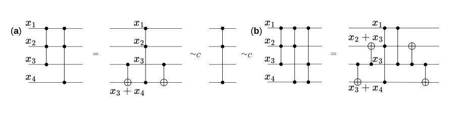
<figcaption class="paper-figure-caption"><b>Fig 3.</b> Figure 3: Examples of Clifford equivalence. (a) and (b) are both Clifford equivalent to a single CCZ gate. (a) x1x2x3+x1x2x4 = x1x2(x3+x4). (b) x1x2x3+x1x2x4+x1x3x4 = x1(x2+x3)(x3+x4)+x1x3.</figcaption>
</figure>
<figure class="paper-figure-card">
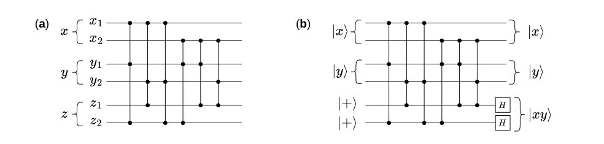
<figcaption class="paper-figure-caption"><b>Fig 4.</b> Figure 4: (a) F4-qudit CCZ expanded as qubit CCZs. Expand x = x1ω + x2ω2, where x1, x2 ∈F2, and similarly for y, z. (b) The magic state corresponding to F4-CCZ can be consumed to perform multiplication in F4 – one just needs to conjugate the third pair of qubits by Hadamard gates.</figcaption>
</figure>
<figure class="paper-figure-card">
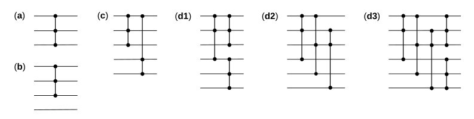
<figcaption class="paper-figure-caption"><b>Fig 5.</b> Figure 5: U β 7 gate expanded in qubit CCZ gates up to Clifford equivalence. (a) U β 7 in F8 with β satisfying tr(β) ̸= 0. If tr(β) = 0, Uβ 7 is the identity. (b) In F16, all U β 7 for which β ̸= 0 are Clifford equivalent to a single CCZ. (c) In F32, all U β 7 for which β ̸= 0 are Clifford equivalent to a TOF# gate. (d1-d3) In F64; (d1) For β = α7i; (d2) For β = α1+7i or α2+7i or α4+7i; (d3) For β = α3+7i or α5+7i</figcaption>
</figure>
</div>

<p><strong>Summary.</strong> This paper develops novel protocols for generating high-fidelity magic states crucial for fault-tolerant quantum computing. By employing sophisticated techniques involving codes over binary extension fields, the authors significantly improve distillation efficiency compared to current methods. The results demonstrate that their new algebraic approaches offer superior performance metrics when considering resource scaling and error handling.</p>
<p><strong>Why it may be interesting.</strong> While focused on quantum computation theory, the rigorous application of advanced algebraic structures (like those from coding theory) to resource optimization mirrors complex theoretical modeling seen in condensed matter systems, particularly when analyzing correlated errors or resource scaling laws.</p>
<details>
<summary>Detailed structure</summary>
<p><strong>Main problem.</strong> The primary challenge addressed is minimizing the overhead associated with generating high-fidelity magic states required for fault-tolerant quantum computation.</p>
<p><strong>Main result.</strong> The authors introduce new, highly efficient distillation protocols by utilizing algebraic geometric techniques over binary extension fields ($\mathbb{F}_{2^s}$), showing performance superior to state-of-the-art methods in most tested regimes.</p>
<p><strong>Method.</strong> They employ advanced coding theory, constructing codes over finite field extensions and packaging multi-qubit gates into simpler structures within these larger fields for distillation analysis.</p>
<p><strong>Model / system.</strong> The work is situated in the context of qubit-based quantum computing architectures, focusing on distilling specific multi-qubit magic states like CS and CCZ. The underlying mathematical framework involves Galois qudits derived from codes over $\mathbb{F}_{2^s}$.</p>
<p><strong>Key observables.</strong> Distillation rate (output states per unit time/volume), fidelity of distilled states, and the distance ($d$) of the resulting quantum code.</p>
<p><strong>Important parameters / regimes.</strong> Input error rates ($10^{-3}$ and $10^{-6}$); specific multi-qubit gates ($    ext{CS}$, $ ext{CCZ}$, $    ext{TOF}#$); and the field extension size ($s$).</p>
<p><strong>Assumptions / limitations.</strong> The analysis assumes that distillation occurs on logical qubits within a Pauli-based computation model, and some protocols use simplified timing models neglecting certain overheads.</p>
<p><strong>Figures summary.</strong> Figures show Pareto frontiers comparing time rate vs. volumetric rate for various distillation tasks (CS and CCZ), while tables catalogue the specifications of novel distillation protocols.</p>
<p><strong>Paper structure.</strong> The paper progresses from identifying the bottleneck problem to introducing algebraic geometric methods over extension fields, cataloging new protocols in a table, benchmarking them against existing state-of-the-art results using rate metrics, and concluding with performance comparisons across different error regimes.</p>
</details>
<details>
<summary>Abstract</summary>
<p>Fault-tolerant quantum computation architectures are frequently bottlenecked by the overhead of producing high-fidelity magic states. In this work, we use algebraic geometric techniques to construct codes over binary extension fields $\mathbb{F}_{2^s}$, thus discovering new protocols for the distillation of qubit magic states, where our focus is on the regime of practical qubit-based quantum computing architectures. To do this, we show that multi-qubit gates of interest such as $\text{CS}$, $\text{CCZ}$, and $\text{TOF}\# = \text{CCZ}_{123}\text{CCZ}_{345}$, can be packaged into simple gates over the larger fields, and we derive simple algebraic conditions in the extension fields allowing the distillation of these gates. Because they are derived from Galois qudits, the corresponding qubits codes naturally handle the correlated errors present on such multi-qubit states. Moreover, the protocols we discover are extremely compact; for example, we show that 4 $\text{CS}$ states can be distilled to 1 $\text{CS}$ state at distance 2, using only 4 logical qubits. For a case study, we consider the distillation of $\text{CS}$ and $\text{CCZ}$ states from injected $\text{T}$ and $\text{CS}$ states. When optimized for magic state production per unit time, or logical spacetime volume, we find that our protocols outperform the state-of-the-art in almost every situation, both at input error rates $10^{-3}$ (direct injection), and $10^{-6}$ (allowing some cultivation pre-injection).</p>
</details>
<p><sub><a href="#top">↑ back to top</a></sub></p>

<p><a id="paper-2608.09371"></a></p>
<h3 id="magnetotransport-evolution-and-nonlinear-hall-effect-in-altermagnetic-mnte"><a href="http://arxiv.org/abs/2608.09371v1">Magnetotransport evolution and nonlinear Hall effect in altermagnetic MnTe</a></h3>
<p><strong>Authors:</strong> Wei Zhou, Zhifeng Xue, Yunxing Li, Nannan Tang, Ye Tao, Dingyong Zhong, Jiawei Luo, Donghui Guo, Huichao Wang<br>
<strong>Type:</strong> experiment · <strong>Category:</strong> disordered systems and neural networks · <strong>PDF:</strong> <a href="https://arxiv.org/pdf/2608.09371v1">https://arxiv.org/pdf/2608.09371v1</a><br>
<strong>Analysis basis:</strong> full PDF text, analyzed in chunks
<strong>Topic relevance:</strong> <code>quantum measurements</code> <strong>1/5</strong></p>
<div class="figure-strip-hint">↔ Scroll figures horizontally</div>
<div class="paper-figures-scroll">
<figure class="paper-figure-card">
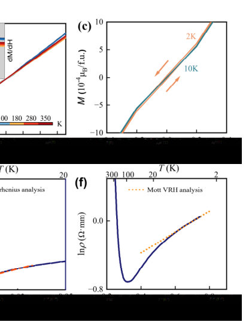
<figcaption class="paper-figure-caption"><b>Fig 1.</b> Figure 1. (a) Temperature dependence of magnetization measured under field-cooling</figcaption>
</figure>
<figure class="paper-figure-card">
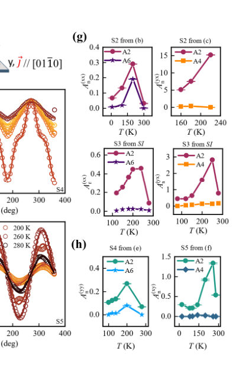
<figcaption class="paper-figure-caption"><b>Fig 2.</b> Figure 2. (a) Experimental schematic, (b) AMR and (c) PHE measured at various</figcaption>
</figure>
<figure class="paper-figure-card">
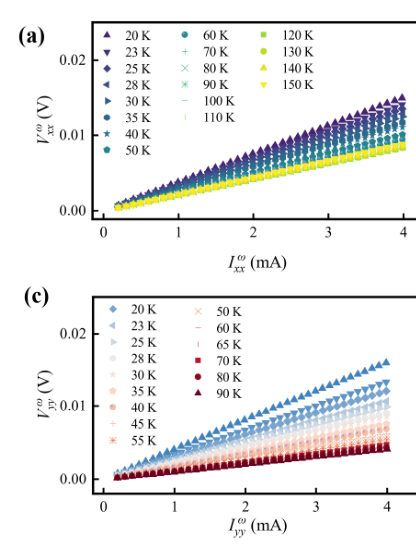
<figcaption class="paper-figure-caption"><b>Fig 3.</b> Figure 3. (a, c) Longitudinal voltages (</figcaption>
</figure>
<figure class="paper-figure-card">
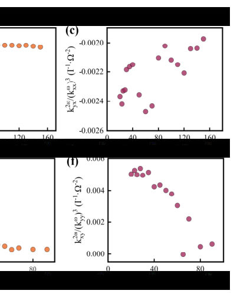
<figcaption class="paper-figure-caption"><b>Fig 4.</b> Figure 4. Temperature dependence of (a, d) first-harmonic coefficients (defined as</figcaption>
</figure>
</div>

<p><strong>Summary.</strong> This work investigates the magnetotransport of altermagnetic MnTe across metallic to hopping conduction regimes. By measuring AMR, PHE, and nonlinear Hall effects, the authors demonstrate that crystalline anisotropy signals are suppressed by increasing disorder, while simultaneously detecting evidence for a macroscopic inversion-asymmetric response in the localized state.</p>
<p><strong>Why it may be interesting.</strong> The study provides a detailed experimental roadmap showing how fundamental symmetries and transport mechanisms break down or change character as disorder increases, which is highly relevant for understanding topological properties in disordered quantum materials.</p>
<details>
<summary>Detailed structure</summary>
<p><strong>Main problem.</strong> To systematically study the magnetotransport behavior (AMR, PHE, nonlinear transport) of altermagnetic MnTe across diverse conducting regimes to understand the interplay between magnetic order, relativistic spin-orbit coupling (SOC), and intrinsic disorder.</p>
<p><strong>Main result.</strong> The material exhibits distinct magnetotransport signatures—high-order harmonics in the metallic regime that diminish upon crossover to a hopping conduction regime, while evidence for macroscopic inversion-asymmetric response is found via nonlinear Hall signals.</p>
<p><strong>Method.</strong> The study combines transport measurements (AMR, PHE, nonlinear I-V curves) with temperature-dependent resistivity analysis across multiple electronic regimes (metallic, hopping, localized).</p>
<p><strong>Model / system.</strong> The physical system is hexagonal $\alpha$-MnTe, a semiconducting altermagnet. The research spans from itinerant band conduction to strongly localized transport governed by Mott Variable-Range Hopping (VRH) in the presence of intrinsic disorder.</p>
<p><strong>Key observables.</strong> Anisotropic Magnetoresistance (AMR), Planar Hall Effect (PHE) harmonics ($n=2, 4, 6$), temperature-dependent resistivity ($
ho(T)$), and second-order nonlinear Hall signals ($V_{2\omega}$).</p>
<p><strong>Important parameters / regimes.</strong> Temperature (especially the crossover points near $100$ K and $300$ K), magnetic field strength (9 T), and disorder/localization parameters.</p>
<p><strong>Assumptions / limitations.</strong> The analysis relies on fitting data to phenomenological models for anisotropy, and it assumes that the observed nonlinear response indicates a macroscopic inversion-asymmetric effect.</p>
<p><strong>Figures summary.</strong> Figures show magnetization vs. temperature/field; angular sweeps of AMR/PHE at fixed fields across temperatures; and plots detailing the temperature dependence of linear and quadratic transport coefficients.</p>
<p><strong>Paper structure.</strong> The paper systematically analyzes magnetotransport by first characterizing magnetic order and resistivity transitions, then examining the high-temperature regime for crystalline anisotropy (AMR/PHE harmonics), followed by analyzing the crossover to localization where higher-order terms vanish, concluding with evidence for nonlinear effects suggesting inversion asymmetry.</p>
</details>
<details>
<summary>Abstract</summary>
<p>Hexagonal MnTe is a prototypical semiconducting altermagnet whose properties are heavily influenced by intrinsic disorder, yet how the resulting diverse transport regimes shape its magnetotransport behavior remains to be clarified alongside the role of relativistic spin-orbit coupling (SOC). Here, we present a systematic study of the anisotropic magnetoresistance (AMR), planar Hall effect (PHE), and nonlinear transport in MnTe bulk single crystals. Below the Néel temperature (TN ~ 304 K), the emergence of high-order harmonics in AMR and PHE within the high-temperature metallic regime reveals the interplay of magnetic order, crystalline symmetry, and SOC. At relatively lower temperatures, the disappearance of higher-order symmetries coincides with a transport crossover into the hopping conduction regime, suggesting that carrier localization diminishes the transport sensitivity to the Fermi-surface topology. In addition, we detect distinct second-order nonlinear Hall signals, providing evidence for a macroscopic inversion-asymmetric response in altermagnetic MnTe. Extending the investigations into the localized regime provides key insights into the subtle role of disorder and SOC in macroscopic charge transport. Our work thus underscores the necessity of exploring magnetotransport across diverse conducting regimes to comprehensively understand altermagnetic properties.</p>
</details>
<p><sub><a href="#top">↑ back to top</a></sub></p>

<p><a id="paper-2608.09661"></a></p>
<h3 id="memory-circuit-and-ansatz-efficient-vqls-for-cfd-on-hybrid-quantum-hpc-systems"><a href="http://arxiv.org/abs/2608.09661v1">Memory-, Circuit-, and Ansatz-Efficient VQLS for CFD on Hybrid Quantum-HPC Systems</a></h3>
<p><strong>Authors:</strong> Chao Lu, Muralikrishnan Gopalakrishnan Meena, Eduardo Antonio Coello Perez, Kalyana Chakravarthi Gottiparthi, Seongmin Kim<br>
<strong>Type:</strong> both · <strong>Category:</strong> quantum information and computing · <strong>PDF:</strong> <a href="https://arxiv.org/pdf/2608.09661v1">https://arxiv.org/pdf/2608.09661v1</a><br>
<strong>Analysis basis:</strong> full PDF text, analyzed in chunks
<strong>Topic relevance:</strong> <code>QC/QI experiment</code> <strong>1/5</strong></p>
<div class="figure-strip-hint">↔ Scroll figures horizontally</div>
<div class="paper-figures-scroll">
<figure class="paper-figure-card">
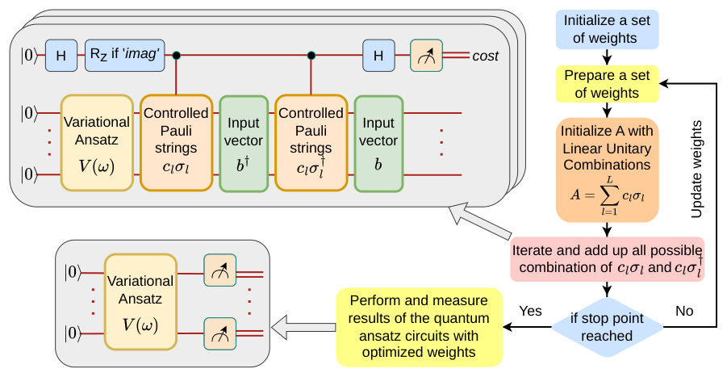
<figcaption class="paper-figure-caption"><b>Fig 1.</b> Fig. 1. VQLS workflow combining quantum circuit components with classical optimization steps to approximate the solution to A |x⟩= |b⟩. The algorithm iterates the quantum circuits by updating the weights to minimize the overall cost. Once optimization converges, the measurement of the Variational ansatz reveals the solution state |x⟩.</figcaption>
</figure>
<figure class="paper-figure-card">
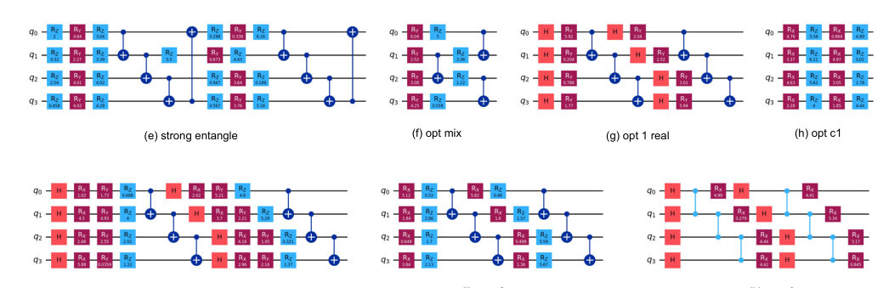
<figcaption class="paper-figure-caption"><b>Fig 2.</b> Fig. 2. Different quantum ansatz setups with the corresponding expressibility. All quantum ansatz shown contain 4 qubits with 2 layers each. The numbers in the quantum gates are the parameters of the quantum ansatz.</figcaption>
</figure>
<figure class="paper-figure-card">
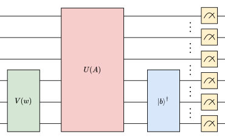
<figcaption class="paper-figure-caption"><b>Fig 3.</b> Fig. 3. Schematic representation of the Variational Quantum Linear Solver (VQLS) utilizing a Block Encoding strategy. The circuit replaces the standard Linear Combination of Unitaries (LCU) decomposition with a block-encoded unitary UA acting on the ancillary and system registers, coupled with the variational ansatz V (θ).</figcaption>
</figure>
<figure class="paper-figure-card">
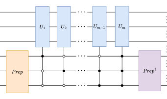
<figcaption class="paper-figure-caption"><b>Fig 4.</b> Fig. 4. Circuit diagram for block encoding via LCU decomposition. The process consists of three stages: the state preparation unitary Prep (acting on the ancilla), the selection operator U1, U2...Um−1, Um (controlled by the ancilla), and the adjoint state preparation Prep†. The qubits that encode the selection operator contain the encoded original matrix A.</figcaption>
</figure>
<figure class="paper-figure-card">
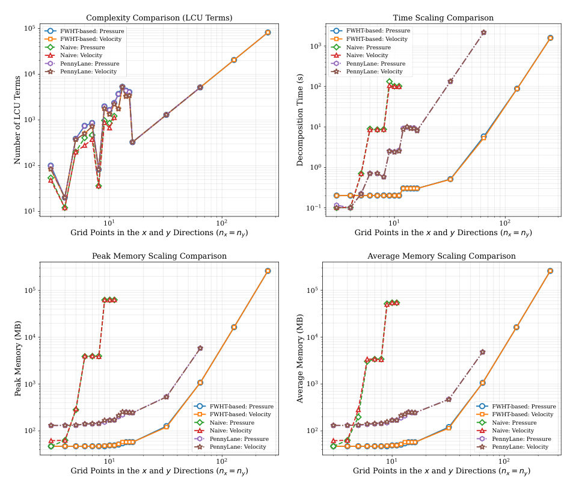
<figcaption class="paper-figure-caption"><b>Fig 5.</b> Fig. 5. Pauli decomposition performance for a canonical Hele–Shaw Jacobian using the naive approach, the PennyLane-integrated approach, and the FWHT approach.</figcaption>
</figure>
</div>

<p><strong>Summary.</strong> This paper addresses the scalability hurdles facing Variational Quantum Linear Solvers (VQLS) when applied to large CFD problems. The authors introduce memory and time-efficient matrix encoding techniques, such as FWHT and SVD decomposition, achieving dramatic speedups over standard methods. By deploying this optimized workflow on a supercomputer, they establish a practical baseline for using near-term quantum hardware in industrial scientific computing workflows.</p>
<p><strong>Why it may be interesting.</strong> This work is highly relevant as it tackles the engineering challenges of applying quantum algorithms to complex physical simulations, providing concrete benchmarks for hybrid quantum-classical integration in fields like fluid dynamics.</p>
<details>
<summary>Detailed structure</summary>
<p><strong>Main problem.</strong> The primary challenge is efficiently implementing Variational Quantum Linear Solvers (VQLS) for solving large linear systems arising from Computational Fluid Dynamics (CFD) on hybrid quantum-HPC platforms.</p>
<p><strong>Main result.</strong> The authors demonstrated significant improvements by using FWHT and SVD-based matrix encodings, achieving speedups up to $10,000	imes$ per iteration, and successfully simulating a 15-qubit system on the Frontier supercomputer.</p>
<p><strong>Method.</strong> They benchmarked multiple quantum circuit encoding strategies (LCU variants) and evaluated various ansatz families by analyzing metrics like expressibility and entanglement capability within a hybrid quantum-classical optimization loop.</p>
<p><strong>Model / system.</strong> The work focuses on solving $Ax=b$ for fluid dynamics problems, specifically using Hele–Shaw flow and tridiagonal Toeplitz systems as test cases. The computation is executed on hybrid quantum-HPC architectures.</p>
<p><strong>Key observables.</strong> VQLS solution fidelity, peak memory usage (reduced by up to $1298	imes$), per-iteration speedup ($>10,000	imes$), and optimization convergence metrics.</p>
<p><strong>Important parameters / regimes.</strong> Qubit count (tested up to 15 qubits), matrix size ($11 	imes 11$ grid), and the choice of ansatz family/optimizer.</p>
<p><strong>Assumptions / limitations.</strong> The primary limitations addressed are the memory explosion of naive LCU encoding, the empirical nature of ansatz selection, and the need for end-to-end testing on production HPC hardware.</p>
<p><strong>Figures summary.</strong> Figures compare VQLS solutions (e.g., velocity reconstruction for Hele–Shaw flow) across different ansatz layers; tables compare expressibility metrics (KL Divergence); and time consumption plots show scaling comparisons between various encoding methods up to 15 qubits.</p>
<p><strong>Paper structure.</strong> The paper first identifies the scalability bottlenecks in VQLS for CFD. It then proposes and benchmarks improved matrix encodings (FWHT, SVD) and systematically evaluates ansatz families using theoretical metrics. Finally, it deploys the full workflow on a major supercomputer to establish a practical baseline.</p>
</details>
<details>
<summary>Abstract</summary>
<p>Fluid dynamics workloads are dominated by repeated solves of large, structured linear systems, motivating the search for quantum acceleration. The Variational Quantum Linear Solver (VQLS) is a leading near-term candidate, but practical deployment on hybrid quantum--high--performance computing (HPC) systems faces three persistent challenges: (i) the linear-combination-of-unitaries (LCU) encoding of the system matrix explodes in memory and runtime as the problem size grows, (ii) ansatz selection is largely empirical, with no clear link between standard circuit metrics and solver convergence, and (iii) end-to-end VQLS pipelines have rarely been exercised on production HPC hardware at non-trivial qubit counts. This work addresses these challenges through three contributions. First, we benchmark four matrix-encoding strategies---naive LCU, PennyLane-integrated, Fast Walsh--Hadamard Transform (FWHT)-based parallel Pauli decomposition, and an singular value decomposition (SVD)-based two-term LCU---and show that the FWHT approach reduces peak memory by up to $1298\times$ on an $11\times 11$ Hele--Shaw grid, while the SVD-based coherent VQLS delivers over $10{,}000\times$ per-iteration speedup over standard Pauli-based VQLS at 8 qubits. Second, we evaluate 11 ansatz families with gradient-free and gradient-based optimizers on canonical Hele--Shaw flow, and find that expressibility and entanglement metrics correlate only weakly with VQLS convergence, motivating problem-aware ansatz design. Third, we deploy the full workflow on the OLCF Frontier supercomputer and successfully simulate a 15-qubit tridiagonal Toeplitz system on a single node. Together, these results establish a practical baseline for VQLS in hybrid quantum--HPC computation fluid dynamic (CFD) workflows and identify the remaining bottlenecks for larger problems.</p>
</details>
<p><sub><a href="#top">↑ back to top</a></sub></p>

<p><a id="paper-2608.07783"></a></p>
<h3 id="multistage-rewinding-decoder-for-qldpc-codes"><a href="http://arxiv.org/abs/2608.07783v1">Multistage Rewinding Decoder for QLDPC Codes</a></h3>
<p><strong>Authors:</strong> Milad Taghipour, Dimitris Chytas, Bane Vasić<br>
<strong>Type:</strong> theory · <strong>Category:</strong> quantum information and computing · <strong>PDF:</strong> <a href="https://arxiv.org/pdf/2608.07783v1">https://arxiv.org/pdf/2608.07783v1</a><br>
<strong>Analysis basis:</strong> full PDF text, analyzed in chunks
<strong>Topic relevance:</strong> <code>quantum measurements</code> <strong>1/5</strong></p>
<div class="figure-strip-hint">↔ Scroll figures horizontally</div>
<div class="paper-figures-scroll">
<figure class="paper-figure-card">
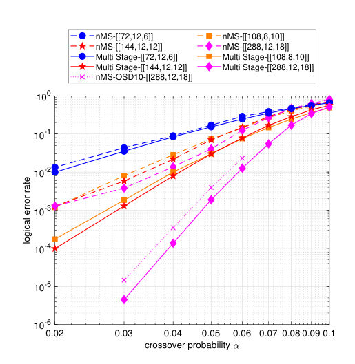
<figcaption class="paper-figure-caption"><b>Fig 1.</b> Fig. 1. Multistage decoder performance for BB codes of various distances. The maximum number of stages is 11, beam width is 64, and top-K selection parameter is 1. The maximum iteration number is set to L = 100.</figcaption>
</figure>
<figure class="paper-figure-card">
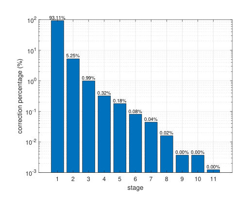
<figcaption class="paper-figure-caption"><b>Fig 2.</b> Fig. 2. Stage correction of the multistage decoding for BB-[[288, 12, 18]] at α = 0.03. The maximum number of stages is 11, beam width is 64, and top-K selection parameter is 1.</figcaption>
</figure>
<figure class="paper-figure-card">
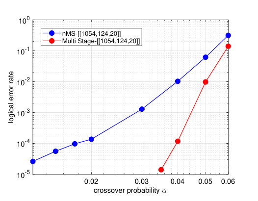
<figcaption class="paper-figure-caption"><b>Fig 3.</b> Fig. 4. Multistage decoder performance for the [[1054, 124, 20]] LP Tanner code. The maximum number of stages is 11, beam width is 64, and top-K selection parameter is 1. The maximum iteration number is set to L = 100.</figcaption>
</figure>
<figure class="paper-figure-card">
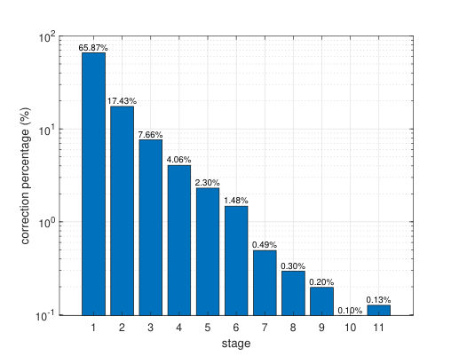
<figcaption class="paper-figure-caption"><b>Fig 4.</b> Fig. 5. Stage correction of the multistage decoding for LP Tanner code at α = 0.04. The maximum number of stages is 11, beam width is 64, and top-K selection parameter is 1.</figcaption>
</figure>
<figure class="paper-figure-card">
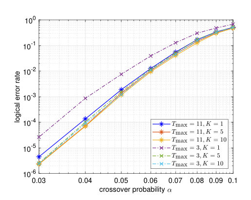
<figcaption class="paper-figure-caption"><b>Fig 5.</b> Fig. 3. Multistage decoder performance for BB-[[288, 12, 18]] codes for different maximum number of stages and top-K selection parameter. The maximum iteration number is set to L = 100.</figcaption>
</figure>
</div>

<p><strong>Summary.</strong> This paper presents a novel multistage decoding framework designed to enhance the performance of Quantum Low-Density Parity Check (QLDPC) codes. By identifying unreliable nodes using a composite metric, the decoder performs guided rewinds within a beam-search structure to escape trapping sets. The results demonstrate substantial improvements in error correction capability compared to existing iterative decoders.</p>
<p><strong>Why it may be interesting.</strong> The systematic approach to overcoming trapping sets in QLDPC decoding is highly relevant for developing practical quantum computation protocols that rely on fault-tolerant quantum memory and communication.</p>
<details>
<summary>Detailed structure</summary>
<p><strong>Main problem.</strong> The primary goal is to improve the decoding performance for Quantum Low-Density Parity Check (QLDPC) codes by overcoming limitations imposed by classical trapping sets and quantum degeneracy.</p>
<p><strong>Main result.</strong> The proposed multistage decoder significantly outperforms standard decoders like normalized min-sum, achieving competitive results with advanced methods such as belief propagation enhanced by ordered statistics decoding.</p>
<p><strong>Method.</strong> It introduces a multistage framework that uses an unreliability metric to guide rewinds—selectively forcing initial log likelihood ratios for the most suspicious variable nodes and restarting the message-passing decoder within a beam-search structure.</p>
<p><strong>Model / system.</strong> The work focuses on QLDPC codes, specifically analyzing non-topological families like Bivariate Bicycle (BB) and Lifted-Product (LP) codes used in Quantum Error Correction (QEC). Decoding is modeled using message-passing algorithms on Tanner graphs.</p>
<p><strong>Key observables.</strong> Logical error rate (LER), unreliability metric components (oscillations, unsatisfied checks), residual syndrome weight, and a posteriori reliability.</p>
<p><strong>Important parameters / regimes.</strong> The crossover probability ($\alpha$), beam width parameter, and the number of decoding stages ($T_{max}$).</p>
<p><strong>Assumptions / limitations.</strong> The performance limitations of standard iterative decoders are attributed to harmful subgraph configurations (trapping sets), which the proposed method systematically addresses.</p>
<p><strong>Figures summary.</strong> Figures illustrate the comparison of LER vs. crossover probability ($\alpha$) for different codes, showing significant performance gains over baseline methods across various stages.</p>
<p><strong>Paper structure.</strong> The paper first establishes the failure dynamics in QLDPC decoding; it then introduces the heuristic unreliability metric and the multistage guided rewind procedure within a beam-search framework; finally, it presents rigorous comparisons of the resulting logical error rates against state-of-the-art decoders.</p>
</details>
<details>
<summary>Abstract</summary>
<p>In this paper, we propose a multistage decoding framework that leverages internal information produced by an underlying message-passing decoder. The proposed method targets the failure dynamics caused by both classical trapping sets and degenerate errors supported on symmetric stabilizers, which are among the primary limitations of iterative decoding for QLDPC codes. To identify unreliable variable nodes, we introduce a heuristic metric that combines several dynamical features of the decoder, including variable-node log likelihood reliabilities, hard-decision oscillations, the number of adjacent unsatisfied checks, and the soft information contributed by unsatisfied checks. Based on this ranking metric, the decoder performs guided rewinds by selectively forcing the initial log likelihood ratio values of the most suspicious variable nodes and restarting the message-passing decoder under the corresponding forced configuration. To manage the combinatorial growth of candidate configurations, the search is formulated within a beam- search framework with controlled beam width. In addition, we introduce a pruning metric based on the combination of the residual syndrome weight and a posteriori reliability of the decoder output, thereby retaining only the most promising search paths. Logical error rate results demonstrate that the proposed decoder significantly outperforms the normalized min- sum decoder and achieves competitive performance with belief propagation enhanced by order-10 ordered statistics decoding.</p>
</details>
<p><sub><a href="#top">↑ back to top</a></sub></p>

<p><a id="paper-2608.08752"></a></p>
<h3 id="overlap-distribution-of-the-critical-sherrington-kirkpatrick-model"><a href="http://arxiv.org/abs/2608.08752v1">Overlap distribution of the critical Sherrington-Kirkpatrick model</a></h3>
<p><strong>Authors:</strong> Hang Du, Brice Huang<br>
<strong>Type:</strong> theory · <strong>Category:</strong> disordered systems and neural networks · <strong>PDF:</strong> <a href="https://arxiv.org/pdf/2608.08752v1">https://arxiv.org/pdf/2608.08752v1</a><br>
<strong>Analysis basis:</strong> full PDF text, analyzed in chunks
<strong>Topic relevance:</strong> <code>non-equilibrium universality</code> <strong>1/5</strong></p>
<div class="figure-strip-hint">↔ Scroll figures horizontally</div>
<div class="paper-figures-scroll">
<figure class="paper-figure-card">
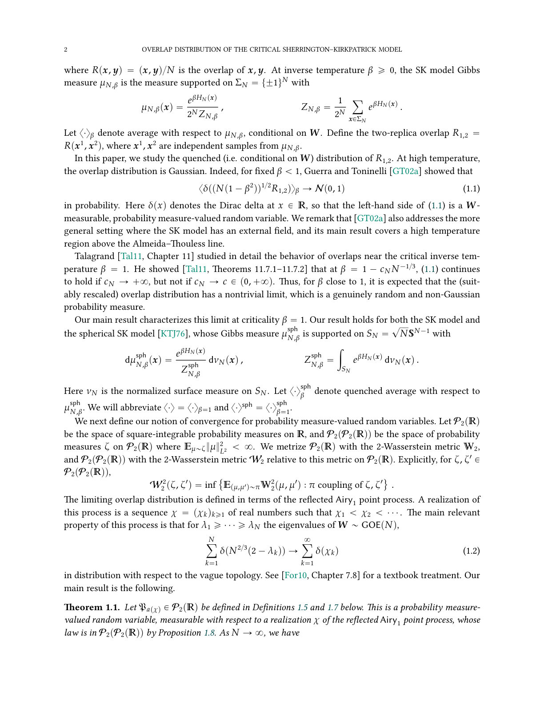
<figcaption class="paper-figure-caption"><b>Fig 1.</b> Low-resolution page preview, page 2</figcaption>
</figure>
<figure class="paper-figure-card">
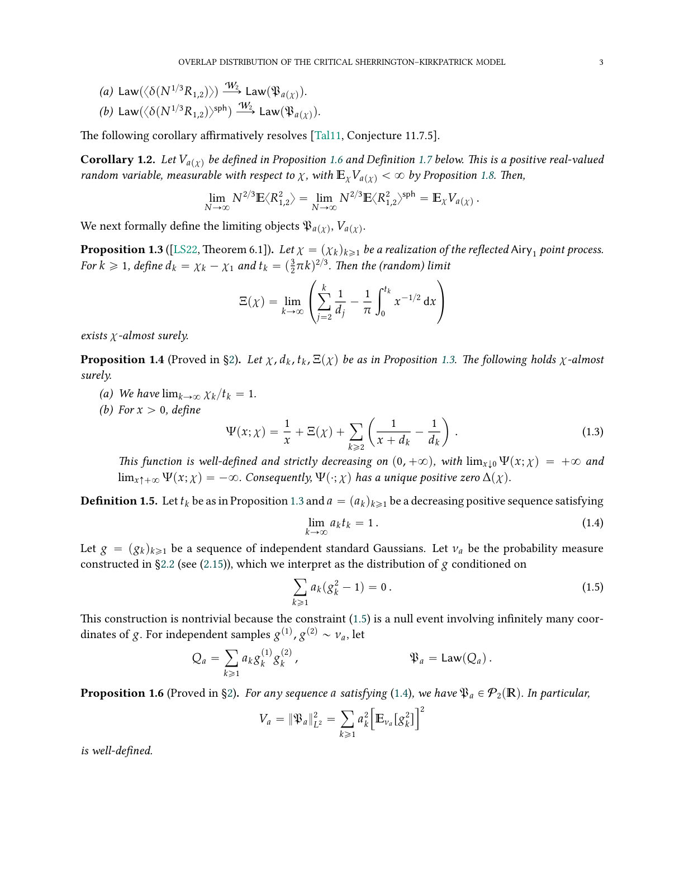
<figcaption class="paper-figure-caption"><b>Fig 2.</b> Low-resolution page preview, page 3</figcaption>
</figure>
<figure class="paper-figure-card">
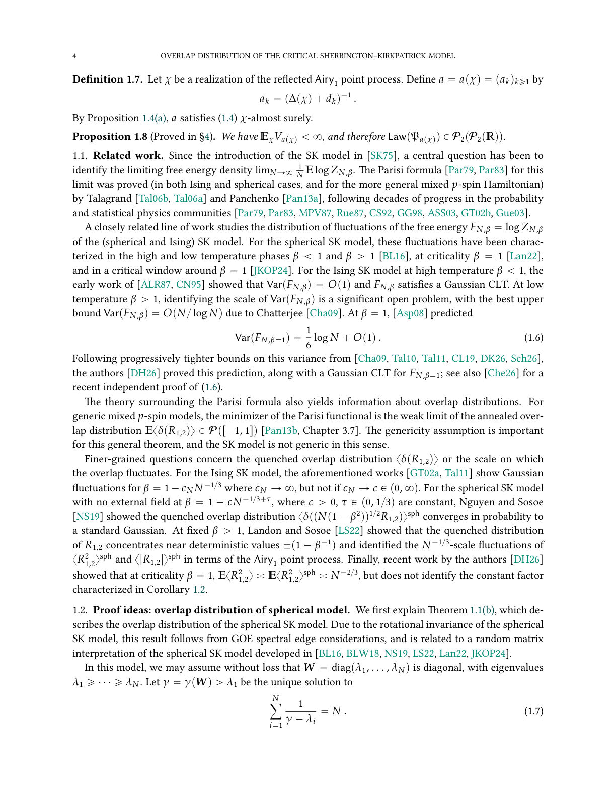
<figcaption class="paper-figure-caption"><b>Fig 3.</b> Low-resolution page preview, page 4</figcaption>
</figure>
<figure class="paper-figure-card">
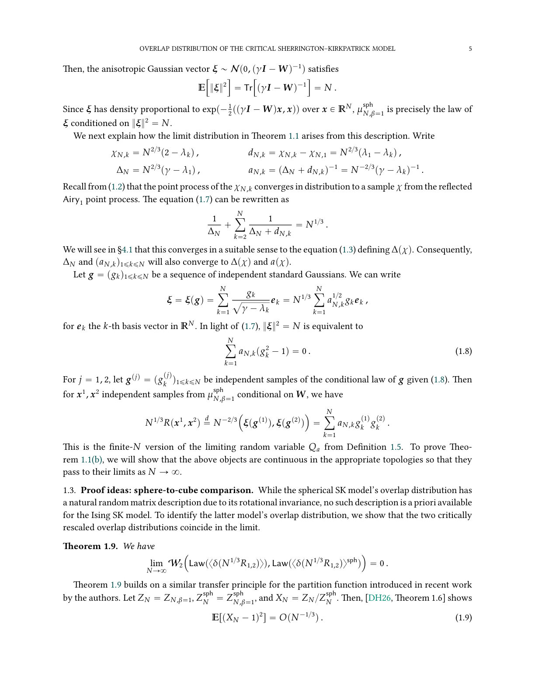
<figcaption class="paper-figure-caption"><b>Fig 4.</b> Low-resolution page preview, page 5</figcaption>
</figure>
<figure class="paper-figure-card">
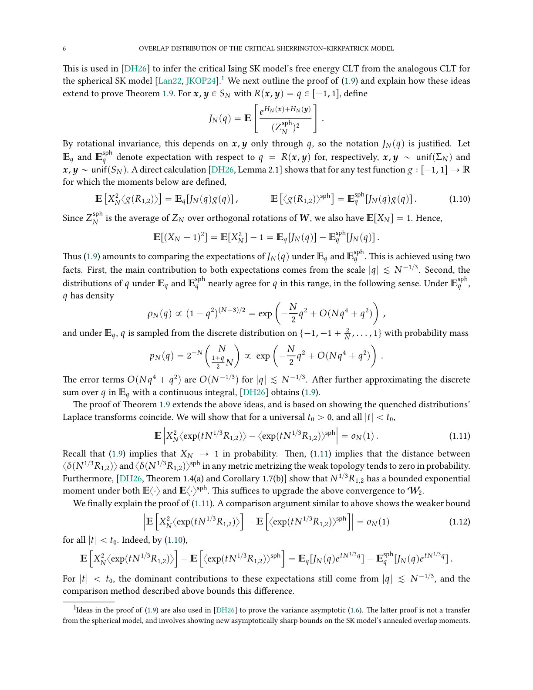
<figcaption class="paper-figure-caption"><b>Fig 5.</b> Low-resolution page preview, page 6</figcaption>
</figure>
</div>

<p><strong>Summary.</strong> This paper rigorously determines the limiting distribution of the two-replica overlap for the critical Sherrington-Kirkpatrick spin glass model. The key finding is that this distribution converges to a measure defined by the reflected Airy$_1$ point process. This work provides deep mathematical insights into disordered systems, connecting them to established results in random matrix theory.</p>
<p><strong>Why it may be interesting.</strong> While focused on spin glasses, the rigorous mathematical techniques involving convergence of point processes ($\mathrm{Airy}_1$) and scaling limits are highly relevant to understanding critical phenomena in complex quantum many-body systems where disorder is present.</p>
<details>
<summary>Detailed structure</summary>
<p><strong>Main problem.</strong> The study focuses on determining the distribution of the two-replica overlap ($R_{1,2}$) in the critical Sherrington-Kirkpatrick (SK) model.</p>
<p><strong>Main result.</strong> The quenched distribution of the scaled overlap converges to a random probability measure defined by the reflected Airy$_1$ point process for both Ising and spherical SK models at criticality ($eta=1$).</p>
<p><strong>Method.</strong> The analysis employs advanced techniques including comparison principles (sphere-to-cube) and passing to scaling limits derived from Gaussian representations, connecting the problem to Random Matrix Theory.</p>
<p><strong>Model / system.</strong> The system is the Sherrington-Kirkpatrick spin glass model, analyzed in both its Ising and spherical variants. The Hamiltonian involves interactions defined by a random matrix $\mathbf{W}$, and the study centers on the Gibbs measure at the critical inverse temperature $eta=1$.</p>
<p><strong>Key observables.</strong> Two-replica overlap ($R_{1,2}$), quenched distribution of $N^{1/3} R_{1,2}$, and the expectation value $\mathbb{E} \langle R_{1,2}^2 
angle$.</p>
<p><strong>Important parameters / regimes.</strong> Critical inverse temperature ($eta=1$), scaling factor $N^{-1/3}$, and convergence to the reflected Airy$_1$ point process.</p>
<p><strong>Assumptions / limitations.</strong> The derivation for the spherical model relies on representing the Gibbs measure as an anisotropic Gaussian conditioned on norm $\sqrt{N}$. The Ising case uses a comparison principle showing asymptotic coincidence with the spherical case.</p>
<p><strong>Paper structure.</strong> The paper systematically analyzes the overlap distribution, first establishing general scaling laws and then deriving the specific limiting measure (reflected Airy$_1$ process) for both the spherical and Ising SK models by leveraging connections to Gaussian measures and random matrix theory.</p>
</details>
<details>
<summary>Abstract</summary>
<p>We study the distribution of the two-replica overlap $R_{1,2}$ in the Ising and spherical Sherrington-Kirkpatrick models at the critical inverse temperature $β= 1$. Our main result shows that in both models, $R_{1,2}$ has scale $N^{-1/3}$, and the quenched distribution of $N^{1/3} R_{1,2}$ converges to an explicit random probability measure defined in terms of the reflected $\mathrm{Airy}_1$ point process. As a consequence, we characterize the limiting value of $N^{2/3} \mathbb{E} \langle R_{1,2}^2 \rangle$, answering a question of Talagrand \cite{talagrand2011mean2}.   For the spherical SK model, we obtain the limit by representing the Gibbs measure as an anisotropic Gaussian on $\mathbb{R}^N$ conditioned to have norm $\sqrt{N}$, and then passing to the $\mathrm{Airy}_1$ scaling limit at the GOE spectral edge. For the Ising SK model, the proof is based on a sphere-to-cube comparison principle showing that the quenched distributions of $N^{1/3} R_{1,2}$ under the spherical and Ising Gibbs measures asymptotically coincide.   This paper is a companion to \cite{du2026fluctuations}, where we introduced a related comparison principle to identify the limiting fluctuations of the SK free energy. Most of the arguments in this paper were generated using GPT-5.6 Pro, with the aim of exploring further consequences of the ideas developed in that work.</p>
</details>
<p><sub><a href="#top">↑ back to top</a></sub></p>

<p><a id="paper-2608.08185"></a></p>
<h3 id="plasmon-modes-in-quadratic-and-cubic-nodal-line-semimetals"><a href="http://arxiv.org/abs/2608.08185v1">Plasmon modes in quadratic and cubic nodal line semimetals</a></h3>
<p><strong>Authors:</strong> Wei Li, Jing-Rong Wang<br>
<strong>Type:</strong> theory · <strong>Category:</strong> strongly correlated electrons · <strong>PDF:</strong> <a href="https://arxiv.org/pdf/2608.08185v1">https://arxiv.org/pdf/2608.08185v1</a><br>
<strong>Analysis basis:</strong> full PDF text, analyzed in chunks
<strong>Topic relevance:</strong> <code>Keldysh / 2PI / non-Gaussian methods</code> <strong>1/5</strong></p>
<div class="figure-strip-hint">↔ Scroll figures horizontally</div>
<div class="paper-figures-scroll">
<figure class="paper-figure-card">
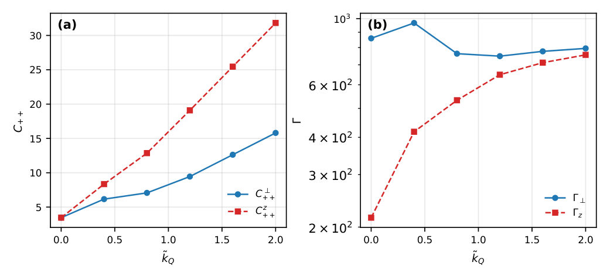
<figcaption class="paper-figure-caption"><b>Fig 1.</b> FIG. 1. Quadratic NLSM: (a) numerically re-determined intraband coefficient C⊥,z ++ (the quantity that sets Ω2 p), Table II; (b) damping-weight ratio Γ⊥,z = C⊥,z ++ /C⊥,z T from Tables II and III, confirming that the intraband channel dominates the long- wavelength response. Both ratios are ≫1 at all ˜kQ: Γ⊥is non-monotonic, peaking near ˜kQ ≃0.4, while Γz rises monotonically with ˜kQ, reflecting the different ˜kQ dependences of C⊥,z ++ and the interband weight C⊥,z T .</figcaption>
</figure>
<figure class="paper-figure-card">

<figcaption class="paper-figure-caption"><b>Fig 2.</b> FIG. 2. Cubic NLSM: (a) numerically re-determined intraband coefficient C⊥,z ++ (sets Ω2 p), Table VII; (b) damping-weight ratio Γ⊥,z = C⊥,z ++ /C⊥,z T from Tables VII and VIII and the Γ values of Table IV; both ratios stay ≫1 (intraband-dominated), with Γz peaking near ˜kQ ≃0.2 and then slowly decreasing while Γ⊥rises monotonically; (c) the anisotropy coefficient ratio Cz ++/C⊥ ++ (whose square root is the frequency ratio Ωz p/Ω⊥ p ), shown approaching the thin-ring asymptote 2 from above and converging with grid refinement out to ˜kQ = 20 by direct full-trace Lindhard integration. The interband term is subleading by roughly two orders of magnitude.</figcaption>
</figure>
<figure class="paper-figure-card">

<figcaption class="paper-figure-caption"><b>Fig 3.</b> FIG. 3. Schematic carrier-density scaling of the plasmon frequency (illustrative; the quantitative prefactors and physical-unit curves are in Fig. 4). Quadratic NLSM: Ωp ∝n1/2. Cubic NLSM: Ωp ∝n2/3 for ˜kQ &lt; 1 (large doping, µ &gt; Bk3 Q) crossing over to Ωp ∝n3/4 for ˜kQ &gt; 1 (small doping, µ &lt; Bk3 Q). The plotted density axis corresponds to the thin-ring window ˜kQ ≳1; the crossover to n2/3 occurs at n∗∼1019 cm−3 (vertical guide, see Fig. 4). These exponents follow from the intraband ReΠ++ alone and are independent of the quantitative prefactors.</figcaption>
</figure>
<figure class="paper-figure-card">

<figcaption class="paper-figure-caption"><b>Fig 4.</b> FIG. 4. Plasmon energy in physical units (meV) vs. carrier density for the cubic NLSM at ˜kQ = 2 (thin-ring limit), with B = 10 eV nm3, kQ = 0.5 nm−1, and ϵ = 10. The blue and red curves show Ω⊥ p and Ωz p, respectively; the √</figcaption>
</figure>
<figure class="paper-figure-card">

<figcaption class="paper-figure-caption"><b>Fig 5.</b> FIG. 5. Schematic HREELS energy-loss spectrum for a cubic NLSM in the thin-ring regime (˜kQ ≥1, n ∼1019 cm−3). The two peaks correspond to the in-plane (⊥) and out-of-plane (z) plasmon modes, separated by the √</figcaption>
</figure>
</div>

<p><strong>Summary.</strong> This paper theoretically investigates the plasmon modes in nodal line semimetals with quadratic and cubic dispersions using the Random Phase Approximation. It derives distinct carrier-density scaling laws ($\omega_p \sim n^{1/2}$ vs. $\omega_p \sim n^{2/3}$) that serve as unique experimental signatures to distinguish between different topological band structures. The findings establish a robust theoretical framework for understanding collective excitations in these advanced materials.</p>
<p><strong>Why it may be interesting.</strong> The work provides a detailed theoretical framework for collective dynamics in topological semimetals, linking fundamental band structure properties (quadratic vs. cubic dispersion) directly to measurable optical responses like plasmons via density scaling exponents.</p>
<details>
<summary>Detailed structure</summary>
<p><strong>Main problem.</strong> The study investigates plasmon modes, which are collective excitations, in higher-order dispersive nodal line semimetals (NLSMs), as these systems are poorly understood compared to their linear counterparts.</p>
<p><strong>Main result.</strong> Distinct carrier-density scaling laws were found: quadratic NLSMs show $\omega_p \sim n^{1/2}$, while cubic NLSMs exhibit regime-dependent scaling ($\omega_p \sim n^{2/3}$ or $n^{3/4}$).</p>
<p><strong>Method.</strong> The plasmon frequency is determined by solving the condition $\epsilon(\Omega, q) = 0$ using the Random Phase Approximation (RPA), involving the calculation of the one-loop polarizability from the full Lindhard integral.</p>
<p><strong>Model / system.</strong> The model considers three-dimensional quadratic and cubic NLSMs characterized by specific Hamiltonian forms. The analysis focuses on calculating the polarization function $\Pi(\Omega, q)$ using both intraband (Drude) and interband contributions.</p>
<p><strong>Key observables.</strong> Plasmon frequency ($\omega_p$), carrier-density scaling exponents ($n^{1/2}$, $n^{2/3}$), and plasmon anisotropy ratio ($\Omega_z^p / \Omega_\perp^p$).</p>
<p><strong>Important parameters / regimes.</strong> Doping regime characterized by the dimensionless offset $   ilde{k}_Q$, and the validity parameter $r_s$ (Wigner-Seitz radius).</p>
<p><strong>Assumptions / limitations.</strong> The calculations are performed within the Random Phase Approximation (RPA), which is assumed valid for $r_s \ll 1$. The intraband term is found to dominate the low-energy plasmon response.</p>
<p><strong>Figures summary.</strong> Figures confirm that the anisotropy ratio $\Gamma_{\perp}/\Gamma_z$ rises from 1.0 at zero doping ($    ilde{k}_Q=0$) to a value near 2 for finite doping, consistent with torus topology.</p>
<p><strong>Paper structure.</strong> The paper systematically derives the density ($n$) first, then calculates the polarization function $\Pi(\Omega, \mathbf{q})$ by separating intraband and interband contributions. Finally, it solves the plasmon dispersion equation using these components to derive the scaling laws for quadratic and cubic NLSMs.</p>
</details>
<details>
<summary>Abstract</summary>
<p>Nodal line semimetals (NLSMs) host distinctive topological properties and unconventional collective excitations. While plasmons in linear NLSMs are well studied, those of higher-order dispersive NLSMs remain poorly understood. We investigate plasmon modes in 3D quadratic and cubic NLSMs within the random phase approximation (RPA), valid for $r_s\ll1$ but breaking down in the small-doping cubic regime where the density of states diverges. Deriving the one-loop polarizability and evaluating its coefficients numerically from the full 3D Lindhard integral, we find distinct carrier-density scaling laws: quadratic NLSMs exhibit $ω_p\sim n^{1/2}$, while cubic NLSMs show $ω_p\sim n^{2/3}$ at large doping crossing over to $ω_p\sim n^{3/4}$ at small doping. The $n^{3/4}$ law is not quantitatively reliable: the diverging density of states drives $r_s>1$ already at $n\sim10^{18}$ cm$^{-3}$, limiting the observable window to at most $10^{18}\lesssim n\lesssim10^{19}$ cm$^{-3}$; below this, beyond-RPA correlations are essential. These scalings originate from the power-law density of states and intraband (Drude) response, and are analogous in phase-space power counting to bilayer and trilayer graphene, respectively. The long-wavelength intraband polarization dominates the plasmon frequency, while interband contributions are subleading (two to three orders of magnitude smaller for $Ω\llμ$). Both systems share a plasmon anisotropy $Ω_p^z/Ω_p^\perp\to\sqrt{2}$ in the thin-ring limit, a generic consequence of the torus Fermi-surface geometry. This $\sqrt{2}$ doublet, though observable by HREELS, cannot distinguish quadratic from cubic dispersion; the density scaling exponent is the true distinguishing signature. Our results provide a framework for the collective dynamics of higher-order dispersive NLSMs and suggest experimentally testable signatures accessible by HREELS.</p>
</details>
<p><sub><a href="#top">↑ back to top</a></sub></p>

<p><a id="paper-2608.07833"></a></p>
<h3 id="playing-nonlocal-games-with-little-to-no-shared-randomness"><a href="http://arxiv.org/abs/2608.07833v1">Playing Nonlocal Games with Little to No Shared Randomness</a></h3>
<p><strong>Authors:</strong> Mingze Xu, Eric Chitambar<br>
<strong>Type:</strong> theory · <strong>Category:</strong> quantum information and computing · <strong>PDF:</strong> <a href="https://arxiv.org/pdf/2608.07833v1">https://arxiv.org/pdf/2608.07833v1</a><br>
<strong>Analysis basis:</strong> full PDF text, analyzed in chunks
<strong>Topic relevance:</strong> <code>quantum measurements</code> <strong>1/5</strong></p>
<div class="figure-strip-hint">↔ Scroll figures horizontally</div>
<div class="paper-figures-scroll">
<figure class="paper-figure-card">

<figcaption class="paper-figure-caption"><b>Fig 1.</b> FIG. 1. A general network consists of m sources distributing physical systems to n parties. Each party i receives an input xi and gives an output ai.</figcaption>
</figure>
<figure class="paper-figure-card">

<figcaption class="paper-figure-caption"><b>Fig 2.</b> FIG. 2. Feasible regions for classical models with |Λ| = 1. In both panels, the solid curves denote the analytic boundaries of the feasible sets, while the shaded regions represent the attainable values. (a) Joint values of (A, E). (b) Joint values of (B, E).</figcaption>
</figure>
<figure class="paper-figure-card">

<figcaption class="paper-figure-caption"><b>Fig 3.</b> FIG. 3. Heatmaps of the functions Cmax, Amax, and Amin. In all panels, colors represent numerical values of the corre- sponding function, and the dashed curves indicate contour lines of equal value. (a) Cmax(A, B). (b) Amax(B, C). (c) Amin(B, C).</figcaption>
</figure>
<figure class="paper-figure-card">

<figcaption class="paper-figure-caption"><b>Fig 4.</b> FIG. 4. A star network with N branches and a central node. Each branch Ai and the central node B share a source Si.</figcaption>
</figure>
</div>

<p><strong>Summary.</strong> This paper rigorously analyzes classical models of Bell nonlocality when shared randomness is restricted or absent. It shows that these restrictions cause the set of achievable classical correlations to become nonconvex, necessitating advanced mathematical tools beyond simple linear inequalities for characterization. The work culminates in deriving new entropic Bell inequalities applicable to quantum networks with limited shared resources.</p>
<p><strong>Why it may be interesting.</strong> While focused on nonlocality, understanding how resource constraints (like limited randomness) fundamentally change the boundary between classical and quantum correlations is a core theoretical problem relevant to designing robust quantum communication protocols.</p>
<details>
<summary>Detailed structure</summary>
<p><strong>Main problem.</strong> The work investigates how restricting shared randomness affects the set of classical correlations achievable in Bell nonlocality tests, comparing these limits to standard quantum network predictions.</p>
<p><strong>Main result.</strong> When shared randomness is absent, the classical correlation set becomes nonconvex, requiring multiple linear or nonlinear inequalities (beyond simple Bell functionals) for accurate characterization. The paper derives an entropic Bell inequality specific to limited shared randomness in bipartite scenarios.</p>
<p><strong>Method.</strong> The authors use optimization techniques, including KKT conditions and analysis of joint conditional probability distributions, to derive necessary constraints on classical correlation functions.</p>
<p><strong>Model / system.</strong> The study focuses on bipartite Bell scenarios (2-2-2 case) and generalized quantum networks involving multiple sources ($m$ sources, $n$ parties). The core model involves characterizing correlations via local hidden variable models under resource restrictions.</p>
<p><strong>Key observables.</strong> Bell functions (A, B, C, D), correlation measures ($M_{n,k}, I_{n,k}, J_{n,k}$), and the entropy quantifying shared randomness $H(S)$.</p>
<p><strong>Important parameters / regimes.</strong> The number of parties/sources ($m, n$), the degree of shared randomness (e.g., $|\Lambda|=1$ for no shared randomness).</p>
<p><strong>Assumptions / limitations.</strong> Initially assumes source independence in standard quantum networks; later relaxes this assumption to analyze correlated sources. A key open question is proving a suggested symmetry between boundary functions.</p>
<p><strong>Figures summary.</strong> Figure 2 illustrates the feasible regions for classical models with limited shared randomness in $(A, E)$ and $(B, E)$ planes. Figure 4 depicts a star network structure used for analyzing bounds.</p>
<p><strong>Paper structure.</strong> The paper progresses from characterizing standard LHV models to handling the nonconvexity arising from zero shared randomness. It then extends this analysis to quantum networks by relaxing source independence assumptions, culminating in deriving specific entropic Bell inequalities.</p>
</details>
<details>
<summary>Abstract</summary>
<p>Bell nonlocality reveals correlations that cannot be explained by classical models and plays a central role in quantum information theory. In this work, we investigate classical models of Bell nonlocality under restrictions on shared randomness. For bipartite scenarios with bounded shared randomness, the set of classical correlations becomes nonconvex. We characterize the correlations achievable without shared randomness through the simultaneous evaluation of multiple linear Bell functionals. We then extend our analysis to quantum networks by relaxing the standard assumption of source independence. In this setting, the feasibility constraints derived for the bipartite case can be used to certify source dependence, and we further construct nonlinear inequalities that distinguish classical models with correlated sources from correlations achievable in standard quantum networks. As an application, we show that these nonlinear network inequalities give rise to an entropic Bell inequality for bipartite scenarios with limited shared randomness.</p>
</details>
<p><sub><a href="#top">↑ back to top</a></sub></p>

<p><a id="paper-2608.09652"></a></p>
<h3 id="qsvm-rqnn-low-qubit-recurrent-quantum-similarity-learning-for-condition-monitoring-and-fault-classification"><a href="http://arxiv.org/abs/2608.09652v1">QSVM-RQNN: Low-Qubit Recurrent Quantum Similarity Learning for Condition Monitoring and Fault Classification</a></h3>
<p><strong>Authors:</strong> Amit S. Patel, Himanshu R. Patel, Bikash K. Behera<br>
<strong>Type:</strong> both · <strong>Category:</strong> quantum information and computing · <strong>PDF:</strong> <a href="https://arxiv.org/pdf/2608.09652v1">https://arxiv.org/pdf/2608.09652v1</a><br>
<strong>Analysis basis:</strong> full PDF text, analyzed in chunks
<strong>Topic relevance:</strong> <code>quantum measurements</code> <strong>1/5</strong></p>
<div class="figure-strip-hint">↔ Scroll figures horizontally</div>
<div class="paper-figures-scroll">
<figure class="paper-figure-card">

<figcaption class="paper-figure-caption"><b>Fig 1.</b> Fig. 1: Conceptual overview of the proposed QSVM-RQNN framework. High-dimensional industrial data are first transformed into compact representations through PCA and balanced using QSMOTE. Centroid-based quantum similarity learning subsequently generates discriminative representations that are processed by a low-qubit recurrent quantum network for efficient fault classification on NISQ devices.</figcaption>
</figure>
<figure class="paper-figure-card">

<figcaption class="paper-figure-caption"><b>Fig 2.</b> Fig. 2: Overall workflow of the proposed QSVM-RQNN framework. The pipeline consists of data preprocessing (normalization, PCA, and QSMOTE), quantum feature encoding, and recurrent quantum representation learning using a compact three-qubit parameterized circuit with shared parameters across timesteps. QSVM-RQNN-V1 performs class-conditioned recurrent similarity learning and classifies using normalized sequence-level quantum similarity scores, whereas QSVM-RQNN-V2 processes timestep-wise quantum similarity features through a recurrent quantum classifier and applies Softmax normalization to the final measurement-derived class scores.</figcaption>
</figure>
<figure class="paper-figure-card">

<figcaption class="paper-figure-caption"><b>Fig 3.</b> Fig. 3: Architectural comparison of the proposed QSVM-RQNN variants. (a) QSVM-RQNN-V1 performs class-conditioned joint quantum encoding of the input timestep and the corresponding class-centroid segment, followed by recurrent quantum processing using a shared low-qubit recurrent quantum block. After processing the complete sequence, a single final quantum measurement produces sequence-level similarity scores, which are normalized to obtain the class probabilities. (b) QSVM-RQNN-V2 first computes timestep-wise quantum similarity features with respect to the two class centroids and encodes these similarity representations into the recurrent quantum circuit. The recurrent block contains an...</figcaption>
</figure>
<figure class="paper-figure-card">

<figcaption class="paper-figure-caption"><b>Fig 4.</b> Fig. 4: Noise robustness analysis of the proposed QSVM-RQNN variants on the SPID dataset after QSMOTE. The F1-score is evaluated under six quantum noise channels, namely bit-flip (BF), phase-flip (PF), bit-phase-flip (BPF), amplitude damping (AD), phase damping (PD), and depolarizing (DP), with the noise probability varied from η = 0 to η = 0.5. QSVM-RQNN-V1 consistently exhibits higher robustness than QSVM-RQNN-V2.</figcaption>
</figure>
<figure class="paper-figure-card">

<figcaption class="paper-figure-caption"><b>Fig 5.</b> Fig. 5: Noise robustness analysis of the proposed QSVM-RQNN variants on the CWRUBD dataset after QSMOTE. The F1-score is evaluated under six quantum noise channels, namely bit-flip (BF), phase-flip (PF), bit-phase-flip (BPF), amplitude damping (AD), phase damping (PD), and depolarizing (DP), while the noise probability is varied from η = 0 to η = 0.5. Phase damping produces almost no degradation.</figcaption>
</figure>
</div>

<p><strong>Summary.</strong> This paper introduces QSVM-RQNN, a novel, low-qubit hybrid framework for fault classification tailored for NISQ devices. It combines Quantum Support Vector Machine similarity learning with Recurrent Quantum Neural Networks to process time-series data efficiently. The resulting model shows state-of-the-art performance while maintaining favorable resource efficiency compared to existing quantum methods.</p>
<p><strong>Why it may be interesting.</strong> While focused on ML applications, the core development involves designing efficient quantum circuits (low-qubit recurrent architecture) to process complex data representations derived from similarity measures, which touches upon resource optimization in quantum computation.</p>
<details>
<summary>Detailed structure</summary>
<p><strong>Main problem.</strong> Developing scalable quantum machine learning (QML) algorithms for fault classification on Noisy Intermediate-Scale Quantum (NISQ) devices while overcoming limitations in qubit resource requirements and noise sensitivity.</p>
<p><strong>Main result.</strong> The proposed QSVM-RQNN framework achieves competitive or state-of-the-art performance across multiple benchmarks, demonstrating superior performance-efficiency trade-offs for fault detection on imbalanced datasets.</p>
<p><strong>Method.</strong> The approach integrates centroid-based Quantum Support Vector Machine (QSVM) similarity learning with Recurrent Quantum Neural Networks (RQNNs), preceded by PCA dimensionality reduction and QSMOTE class balancing.</p>
<p><strong>Model / system.</strong> The system is a low-qubit hybrid quantum architecture utilizing a compact three-qubit recurrent quantum circuit. It processes feature representations derived from the combination of similarity learning and sequential time steps.</p>
<p><strong>Key observables.</strong> Fault classification performance, F1-score (especially for minority classes), recall, and robustness against various quantum noise models.</p>
<p><strong>Important parameters / regimes.</strong> Low qubit count (three qubits); number of recurrent timesteps ($T$) and depth ($L$); dimensionality reduction via PCA.</p>
<p><strong>Assumptions / limitations.</strong> The framework assumes the feasibility of running on NISQ devices despite resource constraints; performance is evaluated against various established quantum/hybrid baselines.</p>
<p><strong>Figures summary.</strong> Figure 1 illustrates the overall workflow: PCA $
ightarrow$ QSMOTE $
ightarrow$ Centroid Construction $
ightarrow$ Compact Recurrent Quantum Architecture. Tables detail ablation studies varying $T$ and $L$, and statistical comparisons using average ranks.</p>
<p><strong>Paper structure.</strong> The paper introduces the problem constraints of NISQ devices, proposes the QSVM-RQNN framework with two variants (V1, V2), details preprocessing steps (PCA, QSMOTE), presents ablation studies on architectural parameters ($T, L$), and concludes with performance comparisons against multiple state-of-the-art models.</p>
</details>
<details>
<summary>Abstract</summary>
<p>In the Noisy Intermediate-Scale Quantum (NISQ) era, limited qubit availability and hardware noise constrain the practical deployment of quantum machine learning (QML). Existing quantum neural network (QNN) and quantum convolutional neural network (QCNN) architectures often require increasing quantum resources as the input dimension grows, limiting scalability on near-term devices. We propose QSVM-RQNN, a low-qubit framework integrating centroid-based Quantum Support Vector Machine (QSVM) similarity learning with Recurrent Quantum Neural Networks (RQNNs) for fault classification. The framework reduces the feature space using principal component analysis (PCA), partitions the reduced representation into sequential timesteps, and processes them using a compact three-qubit recurrent quantum architecture with shared parameters. Two complementary variants are developed: QSVM-RQNN-V1 performs class-conditioned joint quantum encoding of input and centroid segments, whereas QSVM-RQNN-V2 performs recurrent learning over timestep-wise quantum similarity representations. Experimental evaluation on multiple fault diagnosis datasets shows competitive and, in several cases, state-of-the-art performance compared with QSVM, QNN, QCNN, QSVM-QNN, QSVM-QCNN, and RQNN models. The proposed architectures provide favorable performance-efficiency trade-offs, improved recall, and enhanced fault detection on highly imbalanced datasets. These results demonstrate that integrating centroid-based quantum similarity learning with low-qubit recurrent representation learning provides an effective and scalable approach to condition monitoring and fault classification on resource-constrained NISQ devices.</p>
</details>
<p><sub><a href="#top">↑ back to top</a></sub></p>

<p><a id="paper-2608.09823"></a></p>
<h3 id="quantum-information-flow-under-string-diagram-rewriting"><a href="http://arxiv.org/abs/2608.09823v1">Quantum Information Flow under String-Diagram Rewriting</a></h3>
<p><strong>Authors:</strong> Yi-Yu Lin, Chen-Ye Li<br>
<strong>Type:</strong> theory · <strong>Category:</strong> quantum information and computing · <strong>PDF:</strong> <a href="https://arxiv.org/pdf/2608.09823v1">https://arxiv.org/pdf/2608.09823v1</a><br>
<strong>Analysis basis:</strong> full PDF text, analyzed in chunks
<strong>Topic relevance:</strong> <code>quantum measurements</code> <strong>1/5</strong></p>
<div class="figure-strip-hint">↔ Scroll figures horizontally</div>
<div class="paper-figures-scroll">
<figure class="paper-figure-card">

<figcaption class="paper-figure-caption"><b>Fig 1.</b> Figure 1: (a) Quantum teleportation. (b) The corresponding entanglement specification</figcaption>
</figure>
<figure class="paper-figure-card">

<figcaption class="paper-figure-caption"><b>Fig 2.</b> Figure 2: (a) The tree decomposition of quantum teleportation. (b) The configuration</figcaption>
</figure>
<figure class="paper-figure-card">

<figcaption class="paper-figure-caption"><b>Fig 3.</b> Figure 2 introduces the concrete construction of an “entanglement specification net-</figcaption>
</figure>
<figure class="paper-figure-card">

<figcaption class="paper-figure-caption"><b>Fig 4.</b> Figure 3: (a) The traversal rules for quantum information flow. (b) An example of quantum</figcaption>
</figure>
<figure class="paper-figure-card">

<figcaption class="paper-figure-caption"><b>Fig 5.</b> Figure 6: (a) Complete ZX string-diagrammatic representation of the teleportation protocol.</figcaption>
</figure>
</div>

<p><strong>Summary.</strong> This work formalizes 'quantum information flow' by translating the concept into the precise mathematical language of string diagrams using the ZX calculus. It distinguishes between superficial path dependencies and genuine, structure-preserving information transfer paths. By showing that complex quantum protocols can be systematically reduced to simple bare wires via rewriting rules, it offers a powerful diagnostic tool for analyzing quantum circuit integrity.</p>
<p><strong>Why it may be interesting.</strong> It provides a rigorous, graphical language (ZX calculus) for analyzing how entanglement and quantum information are physically channeled through complex multi-partite protocols, which is foundational knowledge for understanding quantum computation architectures.</p>
<details>
<summary>Detailed structure</summary>
<p><strong>Main problem.</strong> The paper aims to provide an explicit, formal string-diagrammatic definition for the concept of 'quantum information flow,' originally introduced by Coecke.</p>
<p><strong>Main result.</strong> It formally defines a 'Coecke flow line' based on the compatible inheritance relation within rewriting systems, demonstrating that genuine flow can be tracked through successive diagram rewrites until it reaches a bare wire factor.</p>
<p><strong>Method.</strong> The authors employ string-diagrammatic rewriting techniques, specifically utilizing the ZX calculus, to model quantum protocols and track information propagation.</p>
<p><strong>Model / system.</strong> The formalism is illustrated using quantum protocols like teleportation (including GHZ-assisted versions), which are modeled within the framework of dagger compact closed categories.</p>
<p><strong>Key observables.</strong> The existence and structure of a 'bare wire factor' that represents the information flow after reduction, and the successful simplification of complex diagrams to this bare wire.</p>
<p><strong>Important parameters / regimes.</strong> Not specified (focus is on structural properties rather than continuous parameters).</p>
<p><strong>Assumptions / limitations.</strong> The analysis relies on the assumption that quantum protocols can be mapped onto string-diagrammatic structures within a dagger compact closed category, and that flow must be certifiable across all measurement branches.</p>
<p><strong>Figures summary.</strong> Figures illustrate the progression from intuitive flow visualization to ESN construction, formalization as string diagrams (including ZX representations), and finally, step-by-step reduction of complex initial diagrams down to simple bare wires for specific protocol instances.</p>
<p><strong>Paper structure.</strong> The paper progresses by revisiting the abstract notion of quantum information flow, developing the mathematical machinery using ESNs and string diagrams in the ZX calculus, and then applying this formalism to concrete examples like teleportation to demonstrate the reduction to a bare wire factor.</p>
</details>
<details>
<summary>Abstract</summary>
<p>We revisit the notion of <code>quantum information flow'' introduced in Bob Coecke's early work and seek to give it an explicit string-diagrammatic formalization. Given a semantics preserving string-diagram rewriting sequence, we first distinguish apparent through-paths, which depend on the current graphical presentation, from genuine through paths, which can be compatibly inherited through successive rewrites to a terminal decoupled bare wire factor. We then formally define a</code>Coecke flow line'' in terms of this compatible inheritance relation.   In particular, we use the ZX calculus, i.e., the ZX string diagram rewriting system, to illustrate the resulting formalism. In the physical setting of quantum protocols, a Coecke flow can be interpreted as a constrained, quasi-local, line-like presentation of a target bare wire morphism factor within the protocol string diagram.</p>
</details>
<p><sub><a href="#top">↑ back to top</a></sub></p>

<p><a id="paper-2608.09578"></a></p>
<h3 id="quantum-uncomputation-of-clean-and-dirty-ancilla-qubits"><a href="http://arxiv.org/abs/2608.09578v1">Quantum Uncomputation of Clean and Dirty Ancilla Qubits</a></h3>
<p><strong>Authors:</strong> Chenke Liu, Li Zhou, Boning Meng<br>
<strong>Type:</strong> theory · <strong>Category:</strong> quantum information and computing · <strong>PDF:</strong> <a href="https://arxiv.org/pdf/2608.09578v1">https://arxiv.org/pdf/2608.09578v1</a><br>
<strong>Analysis basis:</strong> full PDF text, analyzed in chunks
<strong>Topic relevance:</strong> <code>quantum measurements</code> <strong>1/5</strong></p>
<div class="figure-strip-hint">↔ Scroll figures horizontally</div>
<div class="paper-figures-scroll">
<figure class="paper-figure-card">

<figcaption class="paper-figure-caption"><b>Fig 1.</b> Fig. 2. For applying four identical functionalities in parallel on four disjoint 𝑛-qubit blocks (where 𝐶and 𝐶′</figcaption>
</figure>
<figure class="paper-figure-card">

<figcaption class="paper-figure-caption"><b>Fig 2.</b> Fig. 6. Rewrite-based normalization on a running example. Each panel is the circuit after one rewrite step. Dotted box highlights the rewrite result of the previous panel’s violating pair; dashed box marks the next leftmost violating pair. The prefix/suffix grows monotonically, visualizing progress toward the normal form.</figcaption>
</figure>
<figure class="paper-figure-card">

<figcaption class="paper-figure-caption"><b>Fig 3.</b> Figure 8a shows an example. This local pattern alone does not rule out uncomputation; however, in many practical circuits it correlates with non-uncomputability. (b) Commuting through H:</figcaption>
</figure>
<figure class="paper-figure-card">

<figcaption class="paper-figure-caption"><b>Fig 4.</b> Fig. 8. From left to right: a mutual-control circuit 𝐶between an ancilla 𝑎and a working qubit 𝑞, its circuit graph 𝐺, and the modified graph 𝐺↔where all target edges on working qubits are made bidirected; 𝐺↔</figcaption>
</figure>
<figure class="paper-figure-card">

<figcaption class="paper-figure-caption"><b>Fig 5.</b> Fig. 9. Illustration of Aw-Dep computation.</figcaption>
</figure>
</div>

<p><strong>Summary.</strong> This paper presents a unified framework for ensuring the safe disposal (uncomputation) of ancilla qubits in quantum circuits, handling both perfectly initialized ('clean') and arbitrarily initialized ('dirty') states. By proving the problem's computational hardness and introducing the $    ext{RwUn}$ algorithm, it offers state-of-the-art tools that significantly improve circuit synthesis coverage for complex quantum computations.</p>
<p><strong>Why it may be interesting.</strong> This work provides rigorous theoretical guarantees and practical algorithmic improvements for managing resource qubits in quantum computation, which is foundational knowledge for building reliable quantum compilers and hardware control layers.</p>
<details>
<summary>Detailed structure</summary>
<p><strong>Main problem.</strong> The paper addresses the need for automatic, safe uncomputation protocols for auxiliary (ancilla) qubits in quantum circuits, extending coverage from clean to dirty ancillas.</p>
<p><strong>Main result.</strong> They prove that checking the existence of such an uncomputation is coNP-hard and introduce a rewrite-based normalization algorithm ($  ext{RwUn}$) that achieves high coverage on complex benchmarks compared to existing methods.</p>
<p><strong>Method.</strong> The authors develop a unified formalization, employing synthesis-oriented techniques like $ ext{RwUn}$ (a rewrite-based normalization) and a template-based reasoning system to structure circuits for safe uncomputation.</p>
<p><strong>Model / system.</strong> The model is general quantum circuits utilizing ancilla qubits. The focus distinguishes between 'clean' ancillas (known initial state $|0\rangle$) and more complex 'dirty' ancillas (arbitrary, unknown initial state $|x\rangle$).</p>
<p><strong>Key observables.</strong> Circuit size (S), circuit depth (D), and the ability to restore the ancilla to its original input state $|x\rangle$ for dirty qubits.</p>
<p><strong>Important parameters / regimes.</strong> The complexity is analyzed based on dependency structures, quantified by 'Aw-Dep' metrics, and performance is benchmarked across various arithmetic circuits (e.g., Adder, Comparator) at increasing scales ($n$).</p>
<p><strong>Assumptions / limitations.</strong> Applicability is limited by the presence of 'aw-cycles' in Boolean circuits or $H$ gates on ancillas/dependent working qubits in general quantum circuits.</p>
<p><strong>Figures summary.</strong> Figures illustrate dependency complexity calculations and circuit graphs, while Tables summarize resource requirements (Size/Depth) for various arithmetic families under different uncomputation models ($    ext{Aw-Dep}$, $ ext{RwUn}$, $   ext{Reqomp}$).</p>
<p><strong>Paper structure.</strong> The paper establishes the formal problem definition for clean vs. dirty ancillas, proves the coNP-hardness of existence checking, introduces and details the $ ext{RwUn}$ normalization method, and validates its performance through extensive benchmarking against state-of-the-art tools.</p>
</details>
<details>
<summary>Abstract</summary>
<p>Automatic uncomputation aims to provide programming-language-level support to facilitate the correct and safe use of ancilla qubits in quantum computing, but efforts have only been made for clean ancillas, leaving dirty ancillas unexplored. We present a unified formalization of the uncomputation of both clean and dirty ancillas. For the first time, we prove that checking the existence of uncomputation is coNP-hard. We introduce two complementary synthesis-oriented existence-checking methods: a rewrite-based normalization algorithm (RwUn) and a template-based reasoning system (TpUn) that guarantees uncomputation through structured Store-Use patterns. We implement prototypes of both methods in Qiskit and Python. Compared to the state-of-the-art Reqomp~\cite{reqomp}, RwUn achieves 100% coverage on practical complex-dependency benchmarks, twice the coverage on random classical circuits, and about 50% coverage on random quantum circuits beyond the scope of existing methods, demonstrating broader applicability.</p>
</details>
<p><sub><a href="#top">↑ back to top</a></sub></p>

<p><a id="paper-2608.07720"></a></p>
<h3 id="randomized-product-formulas-beyond-optimal-deterministic-scaling"><a href="http://arxiv.org/abs/2608.07720v1">Randomized product formulas beyond optimal deterministic scaling</a></h3>
<p><strong>Authors:</strong> Leeseok Kim, Luis Pedro García-Pintos<br>
<strong>Type:</strong> theory · <strong>Category:</strong> quantum information and computing · <strong>PDF:</strong> <a href="https://arxiv.org/pdf/2608.07720v1">https://arxiv.org/pdf/2608.07720v1</a><br>
<strong>Analysis basis:</strong> full PDF text, analyzed in chunks
<strong>Topic relevance:</strong> <code>analog quantum simulation</code> <strong>1/5</strong></p>
<div class="figure-strip-hint">↔ Scroll figures horizontally</div>
<div class="paper-figures-scroll">
<figure class="paper-figure-card">

<figcaption class="paper-figure-caption"><b>Fig 1.</b> FIG. 1: Schematics of deterministic and randomized product formulas for simulating A + αB over repeated time steps δt in the standard access model. (a) The de- terministic 1st-order formula, (e−iδtαBe−iδtA)r. (b) One instance of the 1st-order randomized formula, Eq. (3). (c) One instance of the 2nd-order randomized formula, Eq. (9), obtained by symmetrizing (b); higher-order for- mulas are recursively constructed from this via Eq. (10).</figcaption>
</figure>
<figure class="paper-figure-card">

<figcaption class="paper-figure-caption"><b>Fig 2.</b> FIG. 2: Dyadic sampling for randomized THRIFT. Sam- pled rectangles in the time-ordering triangle specify the local corrections in Eq. (22).</figcaption>
</figure>
<figure class="paper-figure-card">

<figcaption class="paper-figure-caption"><b>Fig 3.</b> FIG. 4: Gate-count advantage of randomized first-order THRIFT for simulating the dynamics of the 8-qubit random-field Heisenberg chain at t = 9/E0, across inter- action strengths α and target errors ϵ. The color shows the ratio of the smaller median gate count of determin- istic first- and second-order THRIFT to the median ex- pected gate count of randomized first-order THRIFT. For each method, the median is taken over ten independent field realizations of the minimum gate count required to achieve the target error. In the red region, randomized first-order THRIFT requires fewer gates than either first- or second-order deterministic THRIFT.</figcaption>
</figure>
<figure class="paper-figure-card">

<figcaption class="paper-figure-caption"><b>Fig 4.</b> FIG. 3: Minimum number of elementary exponentials (gates) required to simulate the dynamics of the 9-qubit transverse-field Ising model at t = 9/E0, comparing stan- dard deterministic product formulas with our random- ized formulas as a function of α. Our approach requires fewer gates for small α, while deterministic formulas per- form better as α increases since our method uses twice as many gates.</figcaption>
</figure>
</div>

<p><strong>Summary.</strong> The paper introduces novel randomized product formulas to simulate quantum dynamics governed by $H = A + \alpha B$. By averaging over random shifts, these methods achieve significantly better error scaling (e.g., $O(\alpha^3)$) than deterministic protocols. This breakthrough is vital for efficiently simulating weakly coupled quantum systems on near-term quantum hardware.</p>
<p><strong>Why it may be interesting.</strong> This work directly addresses the efficiency bottleneck in quantum simulation algorithms by providing provably superior scaling for time evolution approximations when interactions are weak, which is crucial for simulating many physical systems.</p>
<details>
<summary>Detailed structure</summary>
<p><strong>Main problem.</strong> The primary goal is developing randomized product formulas that overcome fundamental error scaling limitations inherent in deterministic methods for simulating quantum time evolution.</p>
<p><strong>Main result.</strong> Randomized formulas achieve superior error scaling, reaching $O(\alpha^3)$ or better, while maintaining a low expected gate overhead compared to the $\Omega(\alpha)$ or $\Omega(\alpha^2)$ lower bounds proven for deterministic counterparts.</p>
<p><strong>Method.</strong> The authors introduce randomized product formulas by averaging over random shifts in the Trotter steps, which allows error terms that persist deterministically to cancel out through expectation values.</p>
<p><strong>Model / system.</strong> The simulation targets quantum systems governed by a Hamiltonian $H = A + \alpha B$, where $\alpha$ is small. The analysis considers two access models: one allowing separate exponentials of $A$ and $B$, and a stronger model allowing implementation of $e^{-is(A+\alpha B_\ell)}$ for components $B_\ell$.</p>
<p><strong>Key observables.</strong> Error scaling (measured by the diamond norm, $\|\cdot\|_\diamond$), expected gate count ($ ext{E}_\omega[G]$), and comparison against lower bounds.</p>
<p><strong>Important parameters / regimes.</strong> The small coupling strength $\alpha$, the number of Trotter steps ($r$), and the order of approximation ($2k$).</p>
<p><strong>Assumptions / limitations.</strong> The analysis relies on $\alpha \ll 1$ and uses techniques like Dyson series expansions, telescoping identities, and bounding mixed derivatives.</p>
<p><strong>Figures summary.</strong> Figures illustrate schematics comparing deterministic vs. randomized formulas (Fig. 1), detail the dyadic sampling strategy for THRIFT (Fig. 2), and benchmark gate counts/error scaling for physical models (Figs. 3 &amp; 4).</p>
<p><strong>Paper structure.</strong> The paper systematically analyzes two access models, deriving improved error bounds using randomization techniques based on Trotter-Heuristic Resource Improved Formulas (THRIFT) and establishing corresponding lower bounds that prove the necessity of randomization.</p>
</details>
<details>
<summary>Abstract</summary>
<p>Product formulas, also known as Trotter formulas, are among the most widely used and practical methods for simulating quantum systems on quantum computers. Here we introduce two new classes of randomized product formulas for simulating Hamiltonians with separated energy scales, $H=A+αB$, where $α$ is small. In the standard access model, where one can implement exponentials of $A$ and $B$ separately, our randomized formulas achieve $\mathcal O(α^2)$ error scaling at the cost of only doubling the gate depth of the corresponding deterministic formula. We further prove an $Ω(α)$ lower bound for deterministic product formulas. In a stronger access model, allowing exponentials of $A+αB_\ell$ for $B = \sum_{\ell}B_\ell$, our randomized formula, based on Trotter Heuristic Resource Improved Formulas for Time-dynamics (THRIFT)~[J. L. Bosse et al., Nat. Commun. 16, 2673 (2025)], achieves $\mathcal O(α^3)$ error scaling with only constant-factor expected gate overhead. We also establish an $Ω(α^2)$ lower bound for deterministic product formulas in this access model. Numerical simulations confirm gate-count reductions for simulating physically motivated systems.</p>
</details>
<p><sub><a href="#top">↑ back to top</a></sub></p>

<p><a id="paper-2608.08457"></a></p>
<h3 id="solving-the-gibbs-paradox-by-local-free-space-and-collision-potential"><a href="http://arxiv.org/abs/2608.08457v1">Solving the Gibbs Paradox by Local Free Space and Collision Potential</a></h3>
<p><strong>Authors:</strong> Chuang Li<br>
<strong>Type:</strong> theory · <strong>Category:</strong> statistical mechanics · <strong>PDF:</strong> <a href="https://arxiv.org/pdf/2608.08457v1">https://arxiv.org/pdf/2608.08457v1</a><br>
<strong>Analysis basis:</strong> full PDF text, analyzed in chunks
<strong>Topic relevance:</strong> <code>Keldysh / 2PI / non-Gaussian methods</code> <strong>1/5</strong></p>
<div class="figure-strip-hint">↔ Scroll figures horizontally</div>
<div class="paper-figures-scroll">
<figure class="paper-figure-card">

<figcaption class="paper-figure-caption"><b>Fig 1.</b> FIG. 1. A schematic diagram showing the relationship between the collision potential energy ε1p of the molecule type 1 and time.</figcaption>
</figure>
<figure class="paper-figure-card">

<figcaption class="paper-figure-caption"><b>Fig 2.</b> FIG. 2. A schematic diagram showing the relationship between the collision potential energy ε2p of the molecule type 2 and time.</figcaption>
</figure>
<figure class="paper-figure-card">

<figcaption class="paper-figure-caption"><b>Fig 3.</b> FIG. 3. A schematic diagram showing the relationship between the collision potential energy εmp of the molecule type 1&amp;2 and time. Here, εmp is equal to the εm12p or εm21p mentioned later.</figcaption>
</figure>
</div>

<p><strong>Summary.</strong> This paper tackles the Gibbs Paradox by developing a statistical mechanics framework that incorporates local free space and collision potentials. Instead of relying on quantum indistinguishability arguments, it rederives the entropy increase for gas mixtures using the canonical ensemble. The resulting formula suggests that the entropy change depends on specific molecular properties, thus resolving the paradox in a novel way.</p>
<p><strong>Why it may be interesting.</strong> It offers a non-standard statistical mechanical approach to a classic problem, linking macroscopic entropy changes directly to microscopic, time-dependent potential energy interactions during mixing.</p>
<details>
<summary>Detailed structure</summary>
<p><strong>Main problem.</strong> The paper aims to resolve the Gibbs Paradox—the discrepancy regarding entropy increase upon gas mixing—without invoking the concept of identical particles.</p>
<p><strong>Main result.</strong> By incorporating local free space and collision potential energy into the canonical ensemble calculation, the authors derive a non-zero entropy increase formula ($\Delta S$) that depends on specific gas properties.</p>
<p><strong>Method.</strong> The methodology involves rederiving the entropy change using the canonical ensemble approach, treating molecular interactions via collision potentials rather than relying solely on ideal gas assumptions.</p>
<p><strong>Model / system.</strong> The model is an ideal gas mixture undergoing mixing. Interactions are governed by local free space volume and a potential energy term derived from collisions between different types of molecules (Gas 1 and Gas 2).</p>
<p><strong>Key observables.</strong> Entropy increase ($\Delta S$), Free Energy ($F$), Collision Potential Energy ($\epsilon_p$).</p>
<p><strong>Important parameters / regimes.</strong> Molecular mass, effective radius, collision characteristic time, number densities ($n_1, n_2$).</p>
<p><strong>Assumptions / limitations.</strong> The primary assumptions are that collisions are the main interaction force and that the local free space volume dictates molecular movement, allowing avoidance of the $N!$ factor.</p>
<p><strong>Figures summary.</strong> Figures schematically illustrate the time dependence of various collision potential energies ($\epsilon_{1p}, \epsilon_{2p}, \epsilon_{mp}$).</p>
<p><strong>Paper structure.</strong> The paper reviews existing solutions to the Gibbs paradox, develops a framework based on local free space and collision potentials using the canonical ensemble, derives $\Delta S$ by considering interaction potentials, and concludes with an expression showing property dependence.</p>
</details>
<details>
<summary>Abstract</summary>
<p>This paper argues that the Gibbs paradox can be resolved without using the concept of identical particles in quantum mechanics. The molecules in different regions of the gas can be distinguished, so there is no need to introduce the N! factor. For each molecule, the volume of its free movement space is local at every instant. Moreover, collisions are the primary way of interaction between gas molecules and the fundamental driving force for reaching equilibrium. The potential energy during collisions cannot be ignored. Based on the local free space assumption and collision potential energy, this paper uses the canonical ensemble method to rederive the entropy increase formula for gas mixtures. It includes parameters such as molecular mass, effective radius, and collision characteristic time, which vary with the type of gas molecules. This solves the problem that the entropy increase of gas mixtures is independent of gas properties, that is, it truly resolves the Gibbs paradox instead of providing a new conceptual explanation.</p>
</details>
<p><sub><a href="#top">↑ back to top</a></sub></p>

<p><a id="paper-2608.09922"></a></p>
<h3 id="the-quadratic-growth-of-krylov-spread-complexity-in-the-btz-black-hole"><a href="http://arxiv.org/abs/2608.09922v1">The quadratic growth of Krylov spread complexity in the BTZ black hole</a></h3>
<p><strong>Authors:</strong> Aranya Bhattacharya, Mario Flory, Michal P. Heller, Emiliano Rizza, Tim Schuhmann<br>
<strong>Type:</strong> theory · <strong>Category:</strong> other · <strong>PDF:</strong> <a href="https://arxiv.org/pdf/2608.09922v1">https://arxiv.org/pdf/2608.09922v1</a><br>
<strong>Analysis basis:</strong> full PDF text, analyzed in chunks
<strong>Topic relevance:</strong> <code>quantum measurements</code> <strong>1/5</strong></p>
<div class="figure-strip-hint">↔ Scroll figures horizontally</div>
<div class="paper-figures-scroll">
<figure class="paper-figure-card">

<figcaption class="paper-figure-caption"><b>Fig 1.</b> FIG. 1. Lanczos coefficients an(β) (top) and bn(β) (bottom) for Krylov spread complexity of finite-temperature TFD state in DSSYK: analytic predictions at β = 0 (solid line) and numerics at β (dots) in steps of one from zero to ten. All data are for q = 0.95. In both coefficients, an emergent linear regime at intermediate n is visible for nonzero β.</figcaption>
</figure>
<figure class="paper-figure-card">

<figcaption class="paper-figure-caption"><b>Fig 2.</b> FIG. 2. Instantaneous power γ(t) = t∂t log CK(t) of the complexity early-time series in the q →1 limit up to or- der {8,24,40} in t (dashed; light to dark blue) and its diagonal Pad´e approximations of order {4,12,20} (solid; light to dark blue) compared to the exact answer γ(t) = t tanh (t/2)/(2 log cosh(t/2)) (light red). We see rapid conver- gence of the Pad´e approximation towards the exact answer.</figcaption>
</figure>
<figure class="paper-figure-card">

<figcaption class="paper-figure-caption"><b>Fig 3.</b> FIG. 3. Comparison of Lanczos coefficients a0(β) and b1(β) (normalized by appropriate powers of |log q|) from numerics at various temperatures β(θ) (dots) with analytical predictions a(sc) 0 (β) and b(sc) 1 (β) (blue dashed) from the semiclassical par- tition function of DSSYK via CfZ. All data are for q = 0.95. The inverse temperature β goes from zero to ten in steps of one and from ten to fifty in steps of five.</figcaption>
</figure>
<figure class="paper-figure-card">

<figcaption class="paper-figure-caption"><b>Fig 4.</b> FIG. 4. Visualization of the temperature dependence (β increasing from zero to ∞from green to red) of the abso- lute value of the first four coefficients c(sc) 2n (β) of the classical complexity early-time series from the semiclassical partition function of DSSYK, normalized by c(sc) 2 (β) and rescaled by (sin θ)2−2n for visual clarity (dashed). They correspond to n = {1, 2, 3, 4} from top to bottom. The first four early-time coefficients of Schwarzian complexity (solid blue) are repro- duced at β →∞, and the first four early-time coefficients of Lβ=0 = 2 log cosh t/2 (solid magenta) at β →0.</figcaption>
</figure>
<figure class="paper-figure-card">

<figcaption class="paper-figure-caption"><b>Fig 5.</b> FIG. 5. First 100 Lanczos coefficients an(β) in (a) and bn(β) in (b) for Krylov spread complexity of finite temperature TFD state in CFT2. The shaded bands indicate c = 101 (yellow), c = 106 (purple) and c = 1011 (blue). The numerics were carried out at three inverse temperatures β = 1 (green), β = 10−1/2 (orange) and β = 101/2 (red), respectively as indicated by the color of the data points. It is evident that Lanczos coefficients increase with increasing c, n and temperature.</figcaption>
</figure>
</div>

<p><strong>Summary.</strong> This paper develops a systematic method using Krylov spread complexity to probe black hole interiors holographically. By analyzing the BTZ black hole dual to a 2D CFT, the authors show that the complexity exhibits quadratic late-time growth ($\gamma=2$), which requires careful resummation of infinite series invariants. This work provides a powerful new tool linking quantum dynamics (Krylov theory) directly to gravitational thermodynamics.</p>
<p><strong>Why it may be interesting.</strong> This work connects concepts from quantum information (complexity measures), general relativity (black holes/BTZ geometry), and advanced mathematical physics (spectral theory via Krylov methods). The focus on non-trivial asymptotic scaling ($\gamma=2$ vs $\gamma=1$) is highly relevant to understanding the deep structure of holographic entanglement and complexity.</p>
<details>
<summary>Detailed structure</summary>
<p><strong>Main problem.</strong> The primary challenge is determining a robust boundary quantity that accurately captures the growth of black-hole interiors quantified by holographic complexity, especially beyond simple 2D gravity models.</p>
<p><strong>Main result.</strong> The authors establish that for the BTZ black hole dual to CFT2, Krylov spread complexity exhibits an intermediate departure from early-time quadratic growth, followed by behavior compatible with asymptotically quadratic growth ($\gamma=2$).</p>
<p><strong>Method.</strong> The work employs a combination of holographic duality (relating bulk geometry to boundary quantum dynamics), the moment method applied to Lanczos recursion for Krylov spread complexity, and advanced asymptotic analysis techniques like Padé continuation.</p>
<p><strong>Model / system.</strong> The study focuses on black holes, specifically the BTZ black hole in 2D, which is dual to a large-central-charge two-dimensional conformal field theory (CFT). A benchmark system used for comparison is the double-scaled Sachdev–Ye–Kitaev (DSSYK) model.</p>
<p><strong>Key observables.</strong> Krylov spread complexity ($C_K(t)$), generalized complexity built from extrinsic-curvature invariants, and the asymptotic growth rate ($\gamma$) of this complexity.</p>
<p><strong>Important parameters / regimes.</strong> The analysis examines different time/temperature regimes (early vs. late times) and requires careful handling of the order in which semiclassical limits are taken relative to the reconstruction of the complexity measure.</p>
<p><strong>Assumptions / limitations.</strong> Key assumptions include the validity of holographic duality for these systems and the necessity of resumming infinite series expansions (like those involving extrinsic-curvature invariants) to capture the correct asymptotic behavior.</p>
<p><strong>Figures summary.</strong> The notes describe a comparison between finite truncations of an expansion (showing linear growth, $\gamma=1$) and the fully resummed function (showing quadratic growth, $\gamma=2$), illustrating the non-commutativity of limits.</p>
<p><strong>Paper structure.</strong> The paper progresses by first identifying the theoretical gap in complexity measures, then using the DSSYK model as a controlled benchmark to establish an 'order-of-limits' rule. It then applies this framework to the BTZ black hole/CFT2 system, deriving and analyzing the resulting asymptotic behavior of $C_K(t)$ through detailed mathematical expansions.</p>
</details>
<details>
<summary>Abstract</summary>
<p>The boundary quantity that captures the growth of black-hole interiors quantified by holographic complexity remains unknown beyond 2d dilaton gravity. We provide a critical analysis of a partition-function construction of Krylov spread complexity for thermofield-double states that provides a dimension-independent boundary reconstruction from semiclassical holographic partition functions, while developing the present dynamical and bulk construction for the BTZ saddle. In the double-scaled Sachdev-Ye-Kitaev model, where exact and semiclassical results can be compared, we show that the classical limit is reliable only when taken after the complexity has been reconstructed; taking this limit at the level of individual Lanczos coefficients discards essential information. Applying the construction to a large-central-charge two-dimensional conformal field theory above the Hawking-Page temperature dual to a Bañados-Teitelboim-Zanelli black hole, we find an intermediate departure from early-time quadratic growth followed by behavior compatible with a return toward asymptotically quadratic growth, rather than the linear late-time behavior of the volume and the standard finite-functional complexity = anything class. We then match this boundary behavior to a generalized complexity = anything bulk object built from an infinite series of extrinsic-curvature invariants. The construction provides a systematic route from black-hole thermodynamics to Krylov dynamics and can naturally be extended to higher-dimensional holographic black holes.</p>
</details>
<p><sub><a href="#top">↑ back to top</a></sub></p>

<p><a id="paper-2608.08272"></a></p>
<h3 id="toward-standardized-quantum-provenance-a-cross-provider-analysis-unified-api-and-reference-prototype"><a href="http://arxiv.org/abs/2608.08272v1">Toward Standardized Quantum Provenance: A Cross-Provider Analysis, Unified API, and Reference Prototype</a></h3>
<p><strong>Authors:</strong> Jouni Peltonen, Vlad Stirbu, Tommi Mikkonen, Cesare Pautasso<br>
<strong>Type:</strong> theory · <strong>Category:</strong> quantum information and computing · <strong>PDF:</strong> <a href="https://arxiv.org/pdf/2608.08272v1">https://arxiv.org/pdf/2608.08272v1</a><br>
<strong>Analysis basis:</strong> full PDF text, analyzed in chunks
<strong>Topic relevance:</strong> <code>quantum measurements</code> <strong>1/5</strong></p>
<div class="figure-strip-hint">↔ Scroll figures horizontally</div>
<div class="paper-figures-scroll">
<figure class="paper-figure-card">

<figcaption class="paper-figure-caption"><b>Fig 1.</b> Fig. 1 Four-stage study design. Solid arrows show the primary flow from requirements to evaluation; each stage produces the artifact or evidence named below it. The dashed feedback arrow indicates Design Science Research build–evaluate cycles in which evaluation findings refined the provenance model and API.</figcaption>
</figure>
<figure class="paper-figure-card">

<figcaption class="paper-figure-caption"><b>Fig 2.</b> Fig. 2 Quantum provenance schema used in this study. White attributes are inherited from or directly aligned with QProv; green attributes represent focused additions introduced for cross-provider API-based provenance access.</figcaption>
</figure>
<figure class="paper-figure-card">

<figcaption class="paper-figure-caption"><b>Fig 3.</b> Fig. 3 Provider-adapter architecture for exposing heterogeneous upstream interfaces through the unified provenance API.</figcaption>
</figure>
<figure class="paper-figure-card">

<figcaption class="paper-figure-caption"><b>Fig 4.</b> Fig. 4 Reference-prototype architecture used in the QMill demonstration. QMill accesses provenance through one common client, while separate Amazon Braket, IBM, and IonQ adapters normalize representative public provider structures into the unified provenance record. The execution path remains provider-specific and is outside the prototype’s implementation scope.</figcaption>
</figure>
</div>

<p><strong>Summary.</strong> This paper tackles the lack of standardization in tracking quantum computation history (provenance) across diverse quantum hardware providers. The authors propose a unified, evidence-aware OpenAPI contract and an adapter architecture to normalize this fragmented data. This framework is vital for achieving reproducibility and interoperability in the rapidly evolving field of quantum computing.</p>
<p><strong>Why it may be interesting.</strong> This work directly addresses the infrastructure layer of quantum computing, which is crucial for any theoretical physicist needing to simulate or analyze results from real-world hardware platforms.</p>
<details>
<summary>Detailed structure</summary>
<p><strong>Main problem.</strong> Quantum software development suffers from a 'provenance-integration problem' because different quantum hardware providers expose necessary provenance data through heterogeneous, non-standardized APIs.</p>
<p><strong>Main result.</strong> The authors propose an evidence-aware OpenAPI 3.1 contract and provider-adapter architecture that successfully normalizes provenance records while preserving provider-specific semantics.</p>
<p><strong>Method.</strong> The methodology involves a comparative analysis of 15 quantum platforms' public documentation, followed by designing and testing a fixture-backed reference prototype covering major providers (Braket, IBM, IonQ).</p>
<p><strong>Model / system.</strong> The focus is on the abstract concept of Quantum Provenance—the comprehensive audit trail describing programs, compilation steps, execution conditions, hardware characterization, and results for quantum computations.</p>
<p><strong>Key observables.</strong> Provenance records (including 21 validated attributes in prototype tests), evidence origins, and structured metadata about computation history.</p>
<p><strong>Important parameters / regimes.</strong> The scope covers five hardware technologies: superconducting, trapped-ion, neutral-atom, photonic, and quantum-annealing devices.</p>
<p><strong>Assumptions / limitations.</strong> The evaluation is limited to public interface documentation and sanitized fixtures; it does not cover live field population or production deployment complexities.</p>
<p><strong>Figures summary.</strong> Figure 1 (mentioned in notes) summarizes the four-stage design process: literature review $
ightarrow$ comparative analysis $
ightarrow$ API artifact development $
ightarrow$ industrial demonstration.</p>
<p><strong>Paper structure.</strong> The paper follows a Design Science Research approach, moving from identifying the need for standardized provenance (RQ1/Literature Review), to analyzing current provider gaps (RQ2/Comparative Analysis), designing the unified OpenAPI contract and adapters (RQ3/Design Principles), and finally demonstrating feasibility with a prototype (RQ4/Evaluation).</p>
</details>
<details>
<summary>Abstract</summary>
<p>Quantum software development requires provenance describing programs, compilation, execution, hardware characterization, results, and software environments, but providers expose this information through heterogeneous software development kits, application programming interfaces, and resource models. We analyze publicly documented provenance access across 15 quantum platforms spanning five hardware technologies and find fragmented, incomplete coverage, with compilation provenance weakest. We propose an evidence-aware OpenAPI 3.1 provenance contract and provider-adapter architecture, evaluated through a fixture-backed reference prototype at QMill covering Amazon Braket, IBM Quantum, and IonQ. All records validate against one common contract while preserving provider-specific semantics, explicit evidence origins, and graceful handling of incomplete data.</p>
</details>
<p><sub><a href="#top">↑ back to top</a></sub></p>
<hr>
<p>
<a href="index.html">← Index</a>
 · <a href="papers_07.html">← Previous</a> · <a href="papers_09.html">Next →</a>
</p>
<hr>

</body>
</html>
